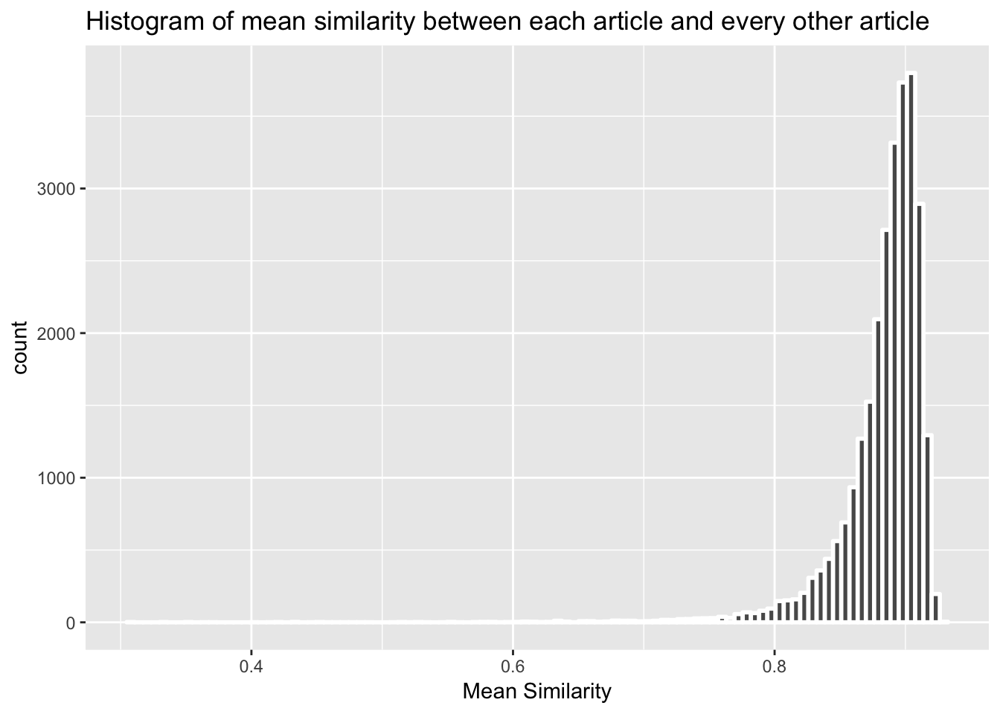
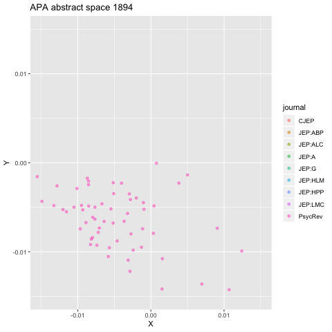
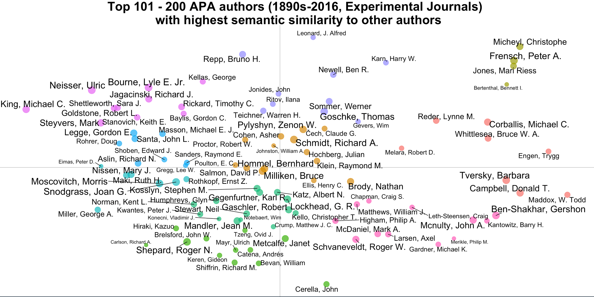
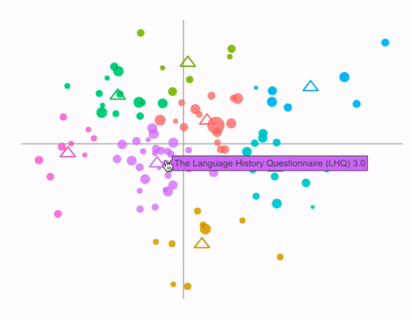

Semantic Librarian Blog
Matt Crump
Last update: 06 June, 2019
library(dplyr)
library(ggplot2)
library(RsemanticLibrarian)
library(lsa)
library(ggrepel)
library(plotly)
library(tidyr)
library(stringr)
library(tm)
library(LSAfun)
library(gganimate)The Semantic Librarian is an R Shiny App developed by Matthew Crump (Brooklyn College of the City University of New York), Randall Jamieson, Matt Cook (University of Manitoba), and Harinder Aujla (University of Winnipeg). We use a vector-space model of word-semantics to all a user to search a set of documents by their semantic similarity. A current version of the app can be found here https://crumplab.shinyapps.io/SemanticLibrarian. This version used select experimental journals from the APA (American Psychological Association) corpus, published between the 1890s and 2016.
We have an in-press manuscript at Behavioral Research methods (Aujla, Crump, Cook, & Jamieson, n.d.).
- Preprint on Psyarxiv.com https://psyarxiv.com/svmtd/
- OSF project with source code: https://osf.io/wfcmg/
- Github Repo for Shiny app: https://github.com/CrumpLab/SemanticLibrarian
- Github Repo for RsemanticLibrarian R package (in dev): https://github.com/CrumpLab/RsemanticLibrarian
- RsemanticLibrarian package website: https://crumplab.github.io/RsemanticLibrarian/
This blog will record some further examination and analyses of the APA database.
The Database
The list of journals is:
load("../allData/allData.RData", envir=.GlobalEnv)
the_journals <- levels(article_df$journal)
for(i in 1:length(the_journals)){
cat("- ",the_journals[i], sep="")
cat("\n")
}- Canadian Journal Of Experimental Psychology
- Journal Of Experimental Psychology: Animal Behavior Processes
- Journal Of Experimental Psychology: Animal Learning And Cognition
- Journal Of Experimental Psychology: Applied
- Journal Of Experimental Psychology: General
- Journal Of Experimental Psychology: Human Learning And Memory
- Journal Of Experimental Psychology: Human Perception And Performance
- Journal Of Experimental Psychology: Learning, Memory, And Cognition
- Psychological Review
There were a total of 27560 abstracts, 24215 authors, and the corpus consisted of 40517 words. We used BEAGLE (Jones & Mewhort, 2007) to create semantic vectors for each word. Then we created abstract vectors for each article by adding the word vectors together (that were in each article). We also created vectors for each author, as the sum of their abstract vectors. This way, all of the words, abstracts, and authors, can be projected into the same high-dimensional semantic space. As a result, it is possible to compute the semantic similarity between any word, abstract, or author. This blog explores some of these relationships.
Top 10 abstracts
5/29/2019
What are the top 10 abstracts published in these APA journals? Who knows. What would the measure be?
How about a different question, which 10 abstracts are the most similar to all other abstracts? Let’s find out. Below is a table of the top 10 abstracts that have the highest mean similarity to all of the other abstracts. To find this, I computed the cosine similarity between each abstract vector and every other abstract vector. That results in a 27560 x 27560 similarity matrix. Each column represents the similarities of an article to all the other articles. I computed the mean for each column, then below, I list the top 10 with the largest means.
load("article_df.RData")
#library(dplyr)
top_10_articles <- article_df %>%
arrange(desc(mean_sim)) %>%
slice(1:10) %>%
mutate(mean_sim = round(mean_sim,digits=3)) %>%
select(title,authorlist,journal,year, mean_sim)
knitr::kable(top_10_articles)| title | authorlist | journal | year | mean_sim |
|---|---|---|---|---|
| The Cognitive Side Of Probability Learning. | Estes, W. K.; | Psychological Review | 1976 | 0.928 |
| On The Experimental Investigation Of Memory. | Kennedy, Francis; | Psychological Review | 1898 | 0.927 |
| The Development Of A General Associative Learning Account Of Skill Acquisition In A Relative Arrival-Time Judgment Task. | Loft, Shayne; Neal, Andrew; Humphreys, Michael S.; | Journal Of Experimental Psychology: Human Perception And Performance | 2007 | 0.927 |
| The Feature-Positive Effect In Adult Human Subjects. | Newman, Joseph P.; Wolff, William T.; Hearst, Eliot; | Journal Of Experimental Psychology: Human Learning And Memory | 1980 | 0.927 |
| After The Learning Is Over: Factors Controlling The Selective Application Of General And Particular Knowledge. | Whittlesea, Bruce W. A.; Brooks, Lee R.; Westcott, Carol; | Journal Of Experimental Psychology: Learning, Memory, And Cognition | 1994 | 0.926 |
| Unconscious Acquisition Of Complex Procedural Knowledge. | Lewicki, Pawel; Czyzewska, Maria; Hoffman, Hunter; | Journal Of Experimental Psychology: Learning, Memory, And Cognition | 1987 | 0.926 |
| Organization And Learning Of Visual-Motor Information During Different Orders Of Limb Movement: Step, Velocity, Acceleration. | Notterman, Joseph M.; Weitzman, Donald O.; | Journal Of Experimental Psychology: Human Perception And Performance | 1981 | 0.926 |
| Matching Performance And The Similarity Structure Of The Stimulus Set. | Crist, William B. | Journal Of Experimental Psychology: General | 1981 | 0.926 |
| Categorization: A Mechanism For Rapid Information Processing. | Ingling, Nancy W. | Journal Of Experimental Psychology: General | 1972 | 0.925 |
| Impact Of Mental Operation Instructions. | Dickinson, Joël; Szeligo, Frank | Canadian Journal Of Experimental Psychology | 2008 | 0.925 |
Interesting. I’ve read a couple of these papers over the years. Estes (1976) is a classic. Whittlesea, Brooks, and Westcott (1994) is a fantastic paper, kind of surprised to see it pop up here.
In many ways I’m not sure what to make of this information. The similarities are all around .93. The abstracts span many years of publication, and multiple journals are represented. Did all of these articles have the same kind of impact on the field? The database currently does not have citation information, and that would be worth adding at some point. At the very least, it wasn’t clear to me before doing this whether the top 10 most similar abstracts would be “good” papers, representing something centrally important about these domains, or whether they would be derivative papers, that are like many other papers, but perhaps not as noteworthy.
Most similar papers by year
How about one more table. Let’s look at the most similar abstracts for each year. Within in each year, I found the paper that had the highest mean similarity to all other papers (across all years). The table below shows the top papers (highest similarity to the set) across the last 50 years.
top_10_articles_year <- article_df %>%
arrange(desc(year)) %>%
group_by(year) %>%
filter(mean_sim == max(mean_sim)) %>%
ungroup() %>%
slice(1:50) %>%
select(title,authorlist,journal,year, mean_sim)
knitr::kable(top_10_articles_year)| title | authorlist | journal | year | mean_sim |
|---|---|---|---|---|
| The Response Dynamics Of Recognition Memory: Sensitivity And Bias. | Koop, Gregory J.; Criss, Amy H.; | Journal Of Experimental Psychology: Learning, Memory, And Cognition | 2016 | 0.9225882 |
| Children With Autism Do Not Show Sequence Effects With Auditory Stimuli. | Molesworth, Catherine; Chevallier, Coralie; Happé, Francesca; Hampton, James A. | Journal Of Experimental Psychology: General | 2015 | 0.9241570 |
| A Three-Component Model Of Relational Responding In The Transposition Paradigm. | Lazareva, Olga F.; Young, Michael E.; Wasserman, Edward A.; | Journal Of Experimental Psychology: Animal Learning And Cognition | 2014 | 0.9245510 |
| Detecting Anomalous Features In Complex Stimuli: The Role Of Structured Comparison. | Kurtz, Kenneth J.; Gentner, Dedre; | Journal Of Experimental Psychology: Applied | 2013 | 0.9244397 |
| Time- And Space-Order Effects In Timed Discrimination Of Brightness And Size Of Paired Visual Stimuli. | Patching, Geoffrey R.; Englund, Mats P.; Hellström, Åke; | Journal Of Experimental Psychology: Human Perception And Performance | 2012 | 0.9245156 |
| The Expertise Reversal Effect: Cognitive Load And Motivational Explanations. | Rey, Günter Daniel; Buchwald, Florian; | Journal Of Experimental Psychology: Applied | 2011 | 0.9231737 |
| Attention, Awareness Of Contingencies, And Control In Spatial Localization: A Qualitative Difference Approach. | Vaquero, Joaquín M. M.; Fiacconi, Chris; Milliken, Bruce; | Journal Of Experimental Psychology: Human Perception And Performance | 2010 | 0.9219982 |
| Bindings Between Stimuli And Multiple Response Codes Dominate Long-Lag Repetition Priming In Speeded Classification Tasks. | Horner, Aidan J.; Henson, Richard N.; | Journal Of Experimental Psychology: Learning, Memory, And Cognition | 2009 | 0.9220503 |
| Impact Of Mental Operation Instructions. | Dickinson, Joël; Szeligo, Frank | Canadian Journal Of Experimental Psychology | 2008 | 0.9250859 |
| The Development Of A General Associative Learning Account Of Skill Acquisition In A Relative Arrival-Time Judgment Task. | Loft, Shayne; Neal, Andrew; Humphreys, Michael S.; | Journal Of Experimental Psychology: Human Perception And Performance | 2007 | 0.9266984 |
| Remembering After A Perception Of Discrepancy: Out With The Old, In With The Two. | Kronlund, Antonia; Whittlesea, Bruce W. A.; | Journal Of Experimental Psychology: Learning, Memory, And Cognition | 2006 | 0.9239148 |
| Selective And Nonselective Transfer: Positive And Negative Priming In A Multiple-Task Environment. | Leboe, Jason P.; Whittlesea, Bruce W. A.; Milliken, Bruce; | Journal Of Experimental Psychology: Learning, Memory, And Cognition | 2005 | 0.9209965 |
| Stimulus Processing Constraints In Audition. | Dyson, Benjamin J.; Quinlan, Philip T.; | Journal Of Experimental Psychology: Human Perception And Performance | 2004 | 0.9243710 |
| The Dynamics Of Learning And Allocation Of Study Time To A Region Of Proximal Learning. | Metcalfe, Janet; Kornell, Nate | Journal Of Experimental Psychology: General | 2003 | 0.9188484 |
| Limited Attention And Cue Order Consistency Affect Predictive Learning: A Test Of Similarity Measures. | Young, Michael E.; Wasserman, Edward A.; | Journal Of Experimental Psychology: Learning, Memory, And Cognition | 2002 | 0.9217152 |
| Effect Anticipation And Action Control. | Elsner, Birgit; Hommel, Bernhard; | Journal Of Experimental Psychology: Human Perception And Performance | 2001 | 0.9224581 |
| Why Do Categories Affect Stimulus Judgment? | Huttenlocher, Janellen; Hedges, Larry V.; Vevea, Jack L. | Journal Of Experimental Psychology: General | 2000 | 0.9227115 |
| Task Representations, Strategy Variability, And Base-Rate Neglect. | Lovett, Marsha C.; Schunn, Christian D. | Journal Of Experimental Psychology: General | 1999 | 0.9196296 |
| Categorical Perception Effects Induced By Category Learning. | Livingston, Kenneth R.; Andrews, Janet K.; Harnad, Stevan; | Journal Of Experimental Psychology: Learning, Memory, And Cognition | 1998 | 0.9242344 |
| Effects Of Background Knowledge On Object Categorization And Part Detection. | Lin, Emilie L.; Murphy, Gregory L.; | Journal Of Experimental Psychology: Human Perception And Performance | 1997 | 0.9227264 |
| Orthographic Processing In Visual Word Recognition: A Multiple Read-Out Model. | Grainger, Jonathan; Jacobs, Arthur M.; | Psychological Review | 1996 | 0.9233809 |
| Aesthetic Properties Of Pictorial Perception. | Takahashi, Shigeko; | Psychological Review | 1995 | 0.9233725 |
| After The Learning Is Over: Factors Controlling The Selective Application Of General And Particular Knowledge. | Whittlesea, Bruce W. A.; Brooks, Lee R.; Westcott, Carol; | Journal Of Experimental Psychology: Learning, Memory, And Cognition | 1994 | 0.9262141 |
| Speed Versus Accuracy Instructions, Study Time, And The Mirror Effect. | Kim, Kisok; Glanzer, Murray; | Journal Of Experimental Psychology: Learning, Memory, And Cognition | 1993 | 0.9206683 |
| The Consistency Model: A Reply To Parducci. | Haubensak, Gert; | Journal Of Experimental Psychology: Human Perception And Performance | 1992 | 0.9208851 |
| Learning The Structure Of Event Sequences. | Cleeremans, Axel; Mcclelland, James L. | Journal Of Experimental Psychology: General | 1991 | 0.9248790 |
| Schedules Of Presentation And Temporal Distinctiveness In Human Memory. | Neath, Ian; Crowder, Robert G.; | Journal Of Experimental Psychology: Learning, Memory, And Cognition | 1990 | 0.9219984 |
| Perceptual Learning Of Spatiotemporal Events: Evidence From An Unfamiliar Modality. | Epstein, William; Hughes, Barry; Schneider, Sandra L.; Bach-y-Rita, Paul; | Journal Of Experimental Psychology: Human Perception And Performance | 1989 | 0.9237588 |
| Comparison Requirements And Attention In Identical-Nonidentical Stimulus Discriminations. | Farell, Bart; | Journal Of Experimental Psychology: Human Perception And Performance | 1988 | 0.9228553 |
| Unconscious Acquisition Of Complex Procedural Knowledge. | Lewicki, Pawel; Czyzewska, Maria; Hoffman, Hunter; | Journal Of Experimental Psychology: Learning, Memory, And Cognition | 1987 | 0.9260726 |
| Perceptual Organization Of Behavior: A Hierarchical Control Model Of Coordinated Action. | Marken, Richard S.; | Journal Of Experimental Psychology: Human Perception And Performance | 1986 | 0.9218375 |
| Criterion Shift Rule And Perceptual Homeostasis. | Warren, Richard M.; | Psychological Review | 1985 | 0.9207379 |
| Identification Confusions Among Letters Of The Alphabet. | Gervais, Martin J.; Harvey, Lewis O.; Roberts, Jonathan O.; | Journal Of Experimental Psychology: Human Perception And Performance | 1984 | 0.9210784 |
| The Locus Of Contextual Interference In Motor-Skill Acquisition. | Lee, Timothy D.; Magill, Richard A.; | Journal Of Experimental Psychology: Learning, Memory, And Cognition | 1983 | 0.9246800 |
| Human Reaction Time: Toward A General Theory. | Grice, G. Robert; Nullmeyer, Robert; Spiker, V. Alan | Journal Of Experimental Psychology: General | 1982 | 0.9213748 |
| Organization And Learning Of Visual-Motor Information During Different Orders Of Limb Movement: Step, Velocity, Acceleration. | Notterman, Joseph M.; Weitzman, Donald O.; | Journal Of Experimental Psychology: Human Perception And Performance | 1981 | 0.9256822 |
| The Feature-Positive Effect In Adult Human Subjects. | Newman, Joseph P.; Wolff, William T.; Hearst, Eliot; | Journal Of Experimental Psychology: Human Learning And Memory | 1980 | 0.9265401 |
| Cognitive Influences On Perceptual Processing. | Miller, Jeff; | Journal Of Experimental Psychology: Human Perception And Performance | 1979 | 0.9239728 |
| Stimulus Classification Strategies In An Information Reduction Task. | Briggs, George E.; Thomason, Spencer C.; Hagman, Joseph D. | Journal Of Experimental Psychology: General | 1978 | 0.9219339 |
| Dichotic Competition Of Speech Sounds: The Role Of Acoustic Stimulus Structure. | Repp, Bruno H.; | Journal Of Experimental Psychology: Human Perception And Performance | 1977 | 0.9231545 |
| The Cognitive Side Of Probability Learning. | Estes, W. K.; | Psychological Review | 1976 | 0.9281893 |
| Two Types Of Information In Picture Memory. | Loftus, Geoffrey R.; Bell, Susan M.; | Journal Of Experimental Psychology: Human Learning And Memory | 1975 | 0.9223782 |
| Rule Learning In A Stimulus Integration Task. | Norman, Kent L. | Journal Of Experimental Psychology: General | 1974 | 0.9228059 |
| Correlation And Letter Recognition. | Engel, G. R.; Dougherty, W. C.; Jones, G. Brian | Canadian Journal Of Experimental Psychology | 1973 | 0.9224943 |
| Categorization: A Mechanism For Rapid Information Processing. | Ingling, Nancy W. | Journal Of Experimental Psychology: General | 1972 | 0.9252270 |
| Effects Of Context On Lower Order Rule Learning In Sequential Prediction. | Jones, Mari R. | Journal Of Experimental Psychology: General | 1971 | 0.9198585 |
| Intuitive ‘Counting’ And ‘Tagging’ In Memory. | Howell, William C. | Journal Of Experimental Psychology: General | 1970 | 0.9235640 |
| Comparison Of Training Methods In The Production Of Prism Adaptation. | Foley, Joan E.; Maynes, Florence J. | Journal Of Experimental Psychology: General | 1969 | 0.9233300 |
| Sensory Traces Versus The Psychological Moment In The Temporal Organization Of Form. | Eriksen, Charles W.; Collins, James F. | Journal Of Experimental Psychology: General | 1968 | 0.9181388 |
| Stimulus Variation And Repetition In The Acquisition Of Naming Responses. | Dukes, William F.; Bevan, William | Journal Of Experimental Psychology: General | 1967 | 0.9212483 |
Again, not really sure what to make of this list. Some of these papers are familiar to me, some are not. At the very least, this is a data-driven measure of something about these abstracts, but there were also many assumptions built into the construction of the semantic vectors, and it remains unclear how those assumptions would change the outcome here. Nevertheless, it is interesting to speculate that this kind of approach yields information about the quality of articles, in a similar way to the citation analysis used by Cho, Tse, & Neely (2012), to create a list of top papers in cognitive psychology.
Semantically distinct abstracts
5/30/2019
What are the most semantically distinct abstracts? These might the abstracts with the lowest mean similarity to all other abstracts. In that sense, these abstracts are the ones that are furthest away from the others in semantic space; so they are distinct in terms of their differentness to the entire set. Let’s look at the top 25 and see what we get.
top_25_distinct <- article_df %>%
arrange(mean_sim) %>%
slice(1:25) %>%
mutate(mean_sim = round(mean_sim,digits=3)) %>%
select(title,authorlist,journal,year, mean_sim)
knitr::kable(top_25_distinct)| title | authorlist | journal | year | mean_sim |
|---|---|---|---|---|
| Pierre Janet: 1859-1947. | Guthrie, E. R.; | Psychological Review | 1948 | 0.306 |
| Roswell Parker Angier. | Ross, Robert T.; Devening, Jean McQueen; | Psychological Review | 1947 | 0.309 |
| George Sidney Brett, 1879-1944. | Irving, J. A.; | Psychological Review | 1947 | 0.334 |
| Review Of Ueber Den Einfluss Von Lichtstärke Und Adaptation Auf Das Sehen Des Dichromaten (Grünblinderi). | No authorship indicated; | Psychological Review | 1896 | 0.334 |
| Ueber Die Wirkung Kurzdauernder Lichtreize Auf Das Sehorgan. | Franklin, C. Ladd; | Psychological Review | 1896 | 0.353 |
| Kenneth W. Spence (1907-1967): Obituary. | KENDLER, HOWARD H.; | Psychological Review | 1967 | 0.355 |
| Report Of The Versammlung Deutscher Naturforscher Und Aerzte In Wien Vom 24-30 September, 1894; Section Fur Psychiatrie Und Neurologie. | No authorship indicated; | Psychological Review | 1895 | 0.363 |
| Grace Maxwell Fernald: 1879-1950. | Sullivan, Ellen B.; Dorcus, Roy M.; Allen, Bennet M.; Koontz, Louis K.; | Psychological Review | 1950 | 0.373 |
| Kurt Lewin: 1890-1947. | Tolman, Edward C.; | Psychological Review | 1948 | 0.400 |
| Charles Hubbard Judd, 1873-1946. | Freeman, Frank N.; | Psychological Review | 1947 | 0.417 |
| Lillien Jane Martin, 1851-1943. | Fenton, N.; | Psychological Review | 1943 | 0.419 |
| Comment On Zur Lehre Von Den Gemütfisbewegungen. | Titchener, E.B.; | Psychological Review | 1895 | 0.420 |
| Iv Congrès International De Psychologie, Paris, 1900; Compte Rendu Des Séances Et Texte Des Memoires. | Seashore, C.E.; | Psychological Review | 1901 | 0.431 |
| Moshe Brill: 1910-1943. | Simon, E.; | Psychological Review | 1944 | 0.432 |
| Raymond Royce Willoughby: 1896-1944. | Hunt, J. Mcv.; Hunter, W. S.; Schlosberg, H.; | Psychological Review | 1945 | 0.432 |
| Canadian Theses In Psychology, 1951. | Nolast, Nofirst | Canadian Journal Of Experimental Psychology | 1952 | 0.444 |
| Éditorial. = Editorial. | Dowell, Peter C.; Donald, Merlin W.; Pinard, Adrien | Canadian Journal Of Experimental Psychology | 1978 | 0.453 |
| Review Of Sur Une Forme Spéciale D’Hémianopsie Fonctionnelle Dans La Neurasthénie Et La Névrose Traumatique. | Meyer, A.; | Psychological Review | 1895 | 0.455 |
| Review Of Zur Psychologie Der Gebundenen Und Der Freien Wortstellung. | No authorship indicated; | Psychological Review | 1903 | 0.458 |
| Charles Samuel Myers, 1873-1946. | Viteles, Morris S.; | Psychological Review | 1947 | 0.468 |
| Editorial. | Dodwell, Peter C.; Donald, Merlin W.; Pinard, Adrien | Canadian Journal Of Experimental Psychology | 1978 | 0.473 |
| An Improved System Of Kymographic Recording. | Krueger, R. G. | Journal Of Experimental Psychology: General | 1931 | 0.476 |
| Analytical. | Singer, Edgar A. Jr.; Calkins, Mary Whiton; | Psychological Review | 1900 | 0.483 |
| Abstracts Of The 2009 Csbbcs Annual Meeting. | Nolast, Nofirst | Canadian Journal Of Experimental Psychology | 2009 | 0.492 |
| Ueber Den Einfluss Der Geschwindigkeit Des Pulses Auf Die Zeitdauer Der Reactionszeit Bei Schalleindrücken And Ueber Den Einfluss Der Geschwindigkeit Des Pulses Auf Die Zeitdauer Der Reactionszeit Bei Licht Und Tasteindrucken. | Witmer, Lightner; | Psychological Review | 1895 | 0.509 |
Ok, not really what I was looking for, but sensible. The database contains many entries that are not normal abstracts for empirical papers. They could be editorials by incoming editors, obituaries, and apparently, abstracts not written in English. So, it makes sense that the abstracts above are the kind of abstracts that are most dissimilar to the entire set, which is mostly composed of abstracts for empirical papers.
To look at the abstracts for regular articles, I suppose the database could be tagged, but there are too many entries for me to do that right now. Let’s take a look at the distribution of mean similarity values first, and then perhaps decide to exclude the really rare and weird abstracts based on some exclusion criterion.
#library(ggplot2)
ggplot(article_df, aes(x=mean_sim)) +
geom_histogram(bins=100, size=1, color="white") +
xlab("Mean Similarity")+
ggtitle("Histogram of mean similarity between each article and every other article")
It’s too small to see, but there are some abstracts that span the range into the lower values. Let’s take a look at the 25 articles with the lowest mean similarity, starting with a cutoff of .7.
top_25_distinct <- article_df %>%
arrange(mean_sim) %>%
filter(mean_sim > .7) %>%
slice(1:25) %>%
mutate(mean_sim = round(mean_sim,digits=3)) %>%
select(title,authorlist,journal,year, mean_sim)
knitr::kable(top_25_distinct[1:5,])| title | authorlist | journal | year | mean_sim |
|---|---|---|---|---|
| Editorial. | Pexman, Penny | Canadian Journal Of Experimental Psychology | 2014 | 0.702 |
| Notes. | No authorship indicated; | Psychological Review | 1898 | 0.702 |
| Did Fechner Measure Sensation? | Boring, E. G.; | Psychological Review | 1928 | 0.705 |
| Editorial Announcement: Resignation Of Dr. John A. Long. | Williams, D. C. | Canadian Journal Of Experimental Psychology | 1953 | 0.705 |
| The Parrish Laboratories Of Psychology At Randolph-Macon Woman’S College. | Peak, H. | Journal Of Experimental Psychology: General | 1939 | 0.705 |
I’ll spare the reader, and only show the top 5–still abstracts not related to regular papers. Let’s start at .8 instead.
top_25_distinct <- article_df %>%
arrange(mean_sim) %>%
filter(mean_sim > .8) %>%
slice(1:25) %>%
mutate(mean_sim = round(mean_sim,digits=3)) %>%
select(title,authorlist,journal,year, mean_sim)
knitr::kable(top_25_distinct)| title | authorlist | journal | year | mean_sim |
|---|---|---|---|---|
| Zur Frage Über Die Freiheit Des Willens. | No authorship indicated; | Psychological Review | 1895 | 0.800 |
| Taste Preconditioning Augments Odor-Aversion Learning. | Batsell, W. Robert Jr.; Paschall, Gayla Y.; Gleason, Dorothy I.; Batson, John D.; | Journal Of Experimental Psychology: Animal Behavior Processes | 2001 | 0.800 |
| Postscript. | Juslin, Peter; Olsson, Henrik; | Psychological Review | 2005 | 0.800 |
| Review Of The Child In Hospital. | Grant, Marion E. | Canadian Journal Of Experimental Psychology | 1960 | 0.800 |
| Extinction As A Function Of Partial Reinforcement And Distribution Of Practice. | Sheffield, Virginia F. | Journal Of Experimental Psychology: General | 1949 | 0.800 |
| Studies On The Psychophysiology Of Boredom: Part I. The Effect Of 15 Mgs. Of Benzedrine Sulfate And 60 Mgs. Of Ephedrine Hydrochloride On Blood Pressure, Report Of Boredom And Other Factors. | Barmack, J. E. | Journal Of Experimental Psychology: General | 1939 | 0.800 |
| Memory For The Content Of Caches By Scrub Jays (Aphelocoma Coerulescens). | Clayton, Nicola S.; Dickinson, Anthony; | Journal Of Experimental Psychology: Animal Behavior Processes | 1999 | 0.800 |
| A Quadrant Tachistoscope For Studying The Legibility Of Chinese Characters. | Chou, S. K. | Journal Of Experimental Psychology: General | 1929 | 0.800 |
| Glass-Capillary Ink-Writing Markers For Use In Kymograph Recording. | Smith, K. U. | Journal Of Experimental Psychology: General | 1938 | 0.800 |
| Psychological Literature: Educational. | Butler, Nicholas Murray; | Psychological Review | 1894 | 0.800 |
| Errors In The Critiques Of Gestalt Psychology. Iv. Inconsistencies In Woodworth, Spearman And Mcdougall. | Wheeler, Raymond H.; Perkins, F. Theodore; Bartley, S. Howard; | Psychological Review | 1933 | 0.801 |
| The Effects Of Drugs On A Conditioned Avoidance Response. | Mcmurray, Gordon A.; Jaques, L. B. | Canadian Journal Of Experimental Psychology | 1959 | 0.801 |
| Improved Forms Of Steadiness Tester And Tapping Plate. | Dunlap, K. | Journal Of Experimental Psychology: General | 1921 | 0.801 |
| The Use Of The Illumination Scale For The Detection Of Small Errors In Refraction And In Their Correction. | Ferree, C. E.; Rand, Gertrude | Journal Of Experimental Psychology: General | 1920 | 0.801 |
| Giving Flesh To A ‘Straw Man’: A Reply To Feeney, Pittman, And Wagner. | Walley, Roc E.; Weiden, Theodore D.; | Psychological Review | 1974 | 0.801 |
| Review Of Studies In The Field Of Sociometry. | Neal, Leola E. | Canadian Journal Of Experimental Psychology | 1947 | 0.801 |
| Language, Psychology And Linguistics. | Olmsted, David L.; Moore, Omar Khayyam; | Psychological Review | 1952 | 0.801 |
| Review Of Ueber Die Beziehungen Zwischen Ermudung, Raumsinn Der Haut, Und Muskelleistung. | Lovell, G. B.; | Psychological Review | 1903 | 0.801 |
| Supplementary Report: Partial Reinforcement And Amount Of Reinforcement As Determinants Of Instrumental Licking Rates. | Hulse, Stewart H.; Bacon, W. Edward | Journal Of Experimental Psychology: General | 1962 | 0.801 |
| Anagram Solution Times: A Function Of Individual Differences In Stored Digram Frequencies. | Tresselt, M. E.; Mayzner, M. S. | Journal Of Experimental Psychology: General | 1965 | 0.801 |
| The Relative Sweetness Of Sugars: Sucrose And Dextrose. | Lichtenstein, P. E. | Journal Of Experimental Psychology: General | 1948 | 0.801 |
| National Research Council Associate Committee On Applied Psychology. | Ault, O. E. | Canadian Journal Of Experimental Psychology | 1948 | 0.801 |
| Suggestions Towards The Reorganization Of Courses In Psychology. | Dashiell, J. F.; | Psychological Review | 1924 | 0.801 |
| Review Of Learning Theory, Personality Theory And Clinical Research: The Kentucky Symposium. | Ketchum, J. D. | Canadian Journal Of Experimental Psychology | 1955 | 0.801 |
| Review Of The Foundations Of Belief. | Duncan, Geo. M.; | Psychological Review | 1895 | 0.802 |
Ok, now we are starting to look at more regular articles. And, what do we see? It seems like mainly older articles. Perhaps not surprising. There are fewer of those in the set, and their abstract lengths are typically shorter than newer articles.
Central articles and different metrics
I previously used mean similarity to look at “central” articles. Let’s use a few more descriptive statistics to get at similar issues. There’s a whole bunch of things to try here. I’m going to start with two things. For example, what if we divide mean similarity, by the standard deviation? There’s some good reasons to do that. But before that, let’s look first at the standard deviation.
Articles with highest standard deviation
Using the cosine similarity matrix, I computed the standard deviation of similiarity scores in each column. This gives a measure of dispersion for each article. What do the top 25 articles with the lowest standard deviation look like? Whatever these articles are, they are surrounded the most tightly by the other articles.
top_25_sd <- article_df %>%
arrange(sd_sim) %>%
slice(1:25) %>%
mutate(sd_sim = round(sd_sim,digits=3)) %>%
select(title,authorlist,journal,year, sd_sim)
knitr::kable(top_25_sd)| title | authorlist | journal | year | sd_sim |
|---|---|---|---|---|
| Roswell Parker Angier. | Ross, Robert T.; Devening, Jean McQueen; | Psychological Review | 1947 | 0.024 |
| An Improved System Of Kymographic Recording. | Krueger, R. G. | Journal Of Experimental Psychology: General | 1931 | 0.024 |
| Charles Samuel Myers, 1873-1946. | Viteles, Morris S.; | Psychological Review | 1947 | 0.024 |
| ‘The Effects Of Rocking On The State And Respiration Of Normal And Excessive Cryers’: Erratum. | Elliott, M. Ruth; Fisher, Kimberly; Ames, Elinor W. | Canadian Journal Of Experimental Psychology | 1988 | 0.025 |
| Review Of Sur Une Forme Spéciale D’Hémianopsie Fonctionnelle Dans La Neurasthénie Et La Névrose Traumatique. | Meyer, A.; | Psychological Review | 1895 | 0.025 |
| Pathological. | Delabarre, E. B.; | Psychological Review | 1894 | 0.026 |
| A Simple Cutter Of Cardboard Discs With Or Without Center Holes. | Givler, R. C. | Journal Of Experimental Psychology: General | 1942 | 0.026 |
| Review Of Ueber Die Wirkung Des Eucain B Auf Die Geschmacksorgane. | Gamble, E. A. McC.; | Psychological Review | 1903 | 0.026 |
| An Inexpensive Voice Relay For Use With The Electronic Chronoscope. | Hamburger, F. Jr. | Journal Of Experimental Psychology: General | 1939 | 0.026 |
| The Effects Of Rocking On The State And Respiration Of Normal And Excessive Cryers. | Elliott, M. Ruth; Fisher, Kimberly; Ames, Elinor W. | Canadian Journal Of Experimental Psychology | 1988 | 0.026 |
| Carl Emil Seashore: 1866-1949. | Tiffin, Joseph; | Psychological Review | 1950 | 0.027 |
| The Bentonite Electrode. | Leshan, L.; Farber, A. | Journal Of Experimental Psychology: General | 1946 | 0.027 |
| Ein Einfacher Apparat Zur Bestimmung Der Empfindlichkeit Von Temperaturpunkten. | Franz, Shepherd Ivory; | Psychological Review | 1899 | 0.027 |
| Obituary To Frederico Kiesow, 1858-1941. | Ponzo, M.; | Psychological Review | 1941 | 0.027 |
| A Study Of The Sense Epithets Of Shelley And Keats. | Bliss, Charles B.; | Psychological Review | 1899 | 0.027 |
| Neue Versuche Über Intermittende Gesichtsreize. | Tawney, G. A.; | Psychological Review | 1897 | 0.027 |
| Charles Hubbard Judd, 1873-1946. | Freeman, Frank N.; | Psychological Review | 1947 | 0.027 |
| A Poet’S Portrayal Of Emotion. | Russell, F. T.; | Psychological Review | 1921 | 0.027 |
| [Review Of Zur Kenntniss Des Einflusses Einiger Psychischer Zustände Auf Die Athmung And Ueber Den Einfluss Einiger Psychischer Zustande Auf Kniephänomen Und Muskeltonus]. | Woodworth, R. S.; | Psychological Review | 1901 | 0.028 |
| Experimentelle Untersuchungen Über Die Gefühlsbetonung Der Farben, Helligkeiten, Und Ihrer Combinationen. | Delabarre, E. B.; | Psychological Review | 1895 | 0.028 |
| Civilian To Soldier: Three Sociological Studies Of Infantry Recruit Training. | Solomon, David D. | Canadian Journal Of Experimental Psychology | 1954 | 0.028 |
| Ueber Den Einfluss Der Geschwindigkeit Des Pulses Auf Die Zeitdauer Der Reactionszeit Bei Schalleindrücken And Ueber Den Einfluss Der Geschwindigkeit Des Pulses Auf Die Zeitdauer Der Reactionszeit Bei Licht Und Tasteindrucken. | Witmer, Lightner; | Psychological Review | 1895 | 0.028 |
| Review Of Ueber Die Motorische Einstellung. | Delabarre, E. B.; | Psychological Review | 1901 | 0.028 |
| Review Of Sur Le Mode De So Comporter Des Différentes Sensibilités Sous L’Action De Divers Agents. | Dearborn, George V. N.; | Psychological Review | 1900 | 0.028 |
| Review Of Telepathic Dreams Experimentally Induced. | No authorship indicated; | Psychological Review | 1896 | 0.028 |
Well, I don’t think I’ll be going and reading these articles. The top 25, with the lowest standard deviation appear to be mostly older papers.
Now, what I really wanted to do was to divide the mean similarities, by the standard deviations; then looks at the papers with the highest values. Papers with the highest values will be the ones with larger mean similarity, and small standard deviation. These are the kinds of papers that are perhaps the most central inside the set. They are the closest to all other papers, and they surrounded more closely by the other papers.
top_50_mean_sd <- article_df %>%
mutate(mean_sd = mean_sim / sd_sim) %>%
arrange(desc(mean_sd)) %>%
slice(1:50) %>%
mutate(mean_sd = round(mean_sd,digits=3)) %>%
select(title,authorlist,journal,year, mean_sd)
knitr::kable(top_50_mean_sd)| title | authorlist | journal | year | mean_sd |
|---|---|---|---|---|
| ‘The Effects Of Rocking On The State And Respiration Of Normal And Excessive Cryers’: Erratum. | Elliott, M. Ruth; Fisher, Kimberly; Ames, Elinor W. | Canadian Journal Of Experimental Psychology | 1988 | 30.815 |
| Pathological. | Delabarre, E. B.; | Psychological Review | 1894 | 30.262 |
| Untersuchungen Über Temperaturempfindungen. | Tawney, Guy; | Psychological Review | 1896 | 29.742 |
| Review Of Ueber Die Motorische Einstellung. | Delabarre, E. B.; | Psychological Review | 1901 | 29.652 |
| The Popular Aesthetics Of Color. | Quantz, J. O.; | Psychological Review | 1897 | 29.607 |
| Ueber Die Becinflussung Einfacher Psychischer Vorgänge Durch Korperliche Und Geistige Arbeit. | Warren, H. C.; | Psychological Review | 1895 | 29.445 |
| Review Of Zur Qualitativen Untersuchung Der Association And Experimentelle Untersuchungen Über Associationen. | Calkins, Mary Whiton; | Psychological Review | 1901 | 29.437 |
| Experimentelle Studien Über Associationen. I. Theil. Die Associationen Im Normalen Zustande. | Calkins, Mary Whiton; | Psychological Review | 1897 | 29.421 |
| Edwin Burket Twitmyer: 1873-1943. | Fernberger, S. W.; | Psychological Review | 1943 | 29.417 |
| Éditorial. = Editorial. | Winocur, Gordon | Canadian Journal Of Experimental Psychology | 1991 | 29.390 |
| Der Stundenplan. | Jones, Guernsey; | Psychological Review | 1897 | 29.367 |
| Six Reviews Of Articles On Mental Fatigue And Performance. | Franz, Shepherd Ivory; | Psychological Review | 1897 | 29.357 |
| The Effects Of Rocking On The State And Respiration Of Normal And Excessive Cryers. | Elliott, M. Ruth; Fisher, Kimberly; Ames, Elinor W. | Canadian Journal Of Experimental Psychology | 1988 | 29.345 |
| Editorial. | Winocur, Gordon | Canadian Journal Of Experimental Psychology | 1991 | 29.339 |
| Review Of Quelques Observations Expérimentales Sur L’Influence De L’Insomnie Absolute. | No authorship indicated; | Psychological Review | 1895 | 29.331 |
| Carl Emil Seashore: 1866-1949. | Tiffin, Joseph; | Psychological Review | 1950 | 29.206 |
| La Consommation Du Pain Pendant Une Année Scholaire. | No authorship indicated; | Psychological Review | 1898 | 29.189 |
| Psychological Parerga: Iii. Association Type And Personality. | Wells, F. L.; | Psychological Review | 1919 | 29.145 |
| Clarence Stone Yoakum: 1879-1945. | Pillsbury, W. B.; | Psychological Review | 1946 | 29.138 |
| Fatigue. | MacDougall, R.; | Psychological Review | 1899 | 29.104 |
| Neue Versuche Über Intermittende Gesichtsreize. | Tawney, G. A.; | Psychological Review | 1897 | 29.092 |
| Civilian To Soldier: Three Sociological Studies Of Infantry Recruit Training. | Solomon, David D. | Canadian Journal Of Experimental Psychology | 1954 | 29.049 |
| Review Of Ein Neuer Fallapparat Zur Kontrolle Des Chronoscops. | Steele, W. M.; | Psychological Review | 1903 | 29.039 |
| Note On The Rapidity Of Dreams. | Woodworth, R. S.; | Psychological Review | 1897 | 29.024 |
| Two Cases Of Synæsthesia. | Lay, Wilfrid; | Psychological Review | 1900 | 28.990 |
| Review Of Untersuchungen Über Die Sinnesfunctionen Der Menschlichen Haut. Erste Abhandlung; Druckempfindung Und Schmerz. | Griffing, Harold; | Psychological Review | 1897 | 28.973 |
| The Home And Family Background Of Ottawa Public School Children In Relation To Their Iq’S. | Robbins, John E. | Canadian Journal Of Experimental Psychology | 1948 | 28.967 |
| Ueber Unwillkürliches Flüstern, Eine Kritische Und Experimentelle Untersuchung Der Sogenannten Gedankenübertragung. | No authorship indicated; | Psychological Review | 1896 | 28.804 |
| Review Of Sur Le Mode De So Comporter Des Différentes Sensibilités Sous L’Action De Divers Agents. | Dearborn, George V. N.; | Psychological Review | 1900 | 28.793 |
| ‘On Central And Autonomic Nervous System Mechanisms In Conditioning, Learning, And Performance’: Erratum. | Malmo, R. B. | Canadian Journal Of Experimental Psychology | 1964 | 28.722 |
| The Use Of Psychological Tests In Psychosomatic Research. | Poser, E. G. | Canadian Journal Of Experimental Psychology | 1953 | 28.669 |
| Review Of Experimentelle Unterstuhungen Über Die Helligkeit Der Farben, Unterstuhungen Über Den Lichtsinn, Zur Lehre Von Den Gesichtsempfindungen Welche Aus Successiven Reizen Resultiren, The Use Of The Rotating Sectored Disk In Photometry, And Ueber Den Kieinsten Gesichtswinkel. | Franklin, C. L.; | Psychological Review | 1894 | 28.665 |
| Pattern Preference As A Function Of Pattern Uncertainty. | Dorfman, Donald D.; Mckenna, Helen | Canadian Journal Of Experimental Psychology | 1966 | 28.581 |
| Psychological Literature: Lesions Of The Cortical Nerve Cell In Alcoholism. | Farrand, Livingston; | Psychological Review | 1896 | 28.555 |
| Review Of Ueber Die Percipirende Schicht Der Netzhaut Beim Menschen. | No authorship indicated; | Psychological Review | 1895 | 28.542 |
| Review Of Adolescent Aggression. | Callagan, John E. | Canadian Journal Of Experimental Psychology | 1960 | 28.542 |
| Review Of Beiträge Zur Lehre Von Der Klangwahrnehmung, Phonophotographische Mittheilungen, And A Study Of The Sense Of Equilibrium In Fishes. | Angell, F.; | Psychological Review | 1895 | 28.538 |
| Review Of Effect On The Persistence Of Vision Of Exposing The Eye To Light Of Various Wave-Lengths. | Franklin, C. L.; | Psychological Review | 1901 | 28.536 |
| Review Of Rorschach Introductory Manual. | Warner, Doris C. | Canadian Journal Of Experimental Psychology | 1952 | 28.472 |
| Ueber Eine Neue Methode Zur Prüfung Geistiger Fähigkeiten Und Ihre Anwendung Bei Schulkindern. | No authorship indicated; | Psychological Review | 1897 | 28.471 |
| Concerning Art Standards. | Farnsworth, P. R.; | Psychological Review | 1926 | 28.467 |
| Review Of Experimentelle Untersuchnngen Zur Associationslehre. | Bawden, H. Heath; | Psychological Review | 1902 | 28.453 |
| Pendulum Chronoscopes And Accessories For Psychological Experimentation. | Bergstrom, John A.; | Psychological Review | 1910 | 28.444 |
| Review Of A Note On The Phenomena Of Mescal Intoxication. | Franklin, C. Ladd; | Psychological Review | 1897 | 28.414 |
| Review Of The Daily Life Of A Protozoan: A Study In Comparative Psycho-Physiology. | No authorship indicated; | Psychological Review | 1895 | 28.351 |
| Device For Low-Potential Current In The Psychological Laboratory. | Macfarlane, D. A.; Rooney, J. S. | Journal Of Experimental Psychology: General | 1923 | 28.351 |
| On The Professional Training Of Psychologists. | Hunter, W. S.; | Psychological Review | 1941 | 28.340 |
| Community Of Ideas Of Men And Women. | Calkins, Mary Whiton; | Psychological Review | 1896 | 28.327 |
| The Second Year At The Yale Laboratory. | Scripture, E. W.; | Psychological Review | 1895 | 28.315 |
| Clarification To Mingle Et Al. (2014). | No authorship indicated; | Journal Of Experimental Psychology: Animal Learning And Cognition | 2014 | 28.312 |
Huh. Wasn’t expecting this kind of list. Lots of older papers, and a very different list from the earlier section looking at highest mean similarity. Still, curious to look at this same thing by year. So, the next table find the articles withe highest value (mean similarity divided by standard deviation) in each year. I’ll show the last 50 years:
top_50_articles_year <- article_df %>%
mutate(mean_sd = mean_sim / sd_sim) %>%
arrange(desc(year)) %>%
group_by(year) %>%
filter(mean_sd == max(mean_sd)) %>%
ungroup() %>%
slice(1:50) %>%
select(title,authorlist,journal,year, mean_sd)
knitr::kable(top_50_articles_year)| title | authorlist | journal | year | mean_sd |
|---|---|---|---|---|
| Media Coverage Of ‘Wise’ Interventions Can Reduce Concern For The Disadvantaged. | Ikizer, Elif G.; Blanton, Hart; | Journal Of Experimental Psychology: Applied | 2016 | 25.34518 |
| Prosocial Behavior Leads To Happiness In A Small-Scale Rural Society. | Aknin, Lara B.; Broesch, Tanya; Hamlin, J. Kiley; Van De Vondervoort, Julia W. | Journal Of Experimental Psychology: General | 2015 | 26.15896 |
| Clarification To Mingle Et Al. (2014). | No authorship indicated; | Journal Of Experimental Psychology: Animal Learning And Cognition | 2014 | 28.31157 |
| Corrections To Raaijmakers (2003). | Raaijmakers, Jeroen G. W. | Canadian Journal Of Experimental Psychology | 2013 | 26.38156 |
| The End Justifies The Means, But Only In The Middle. | Touré-Tillery, Maferima; Fishbach, Ayelet | Journal Of Experimental Psychology: General | 2012 | 26.34872 |
| Partitioning Default Effects: Why People Choose Not To Choose. | Dinner, Isaac; Johnson, Eric J.; Goldstein, Daniel G.; Liu, Kaiya; | Journal Of Experimental Psychology: Applied | 2011 | 25.59164 |
| Red, Rank, And Romance In Women Viewing Men. | Elliot, Andrew J.; Niesta Kayser, Daniela; Greitemeyer, Tobias; Lichtenfeld, Stephanie; Gramzow, Richard H.; Maier, Markus A.; Liu, Huijun | Journal Of Experimental Psychology: General | 2010 | 26.08277 |
| ‘Effect Sizes For Experimenting Psychologists’: Correction To Rosnow And Rosenthal (2003). | Rosnow, Ralph L.; Rosenthal, Robert | Canadian Journal Of Experimental Psychology | 2009 | 26.06462 |
| Correction To Condry And Spelke (2008). | Condry, Kirsten F.; Spelke, Elizabeth S. | Journal Of Experimental Psychology: General | 2008 | 26.48781 |
| Review Of Arthur R. Jensen (2006)–Clocking The Mind: Mental Chronometry And Individual Differences. | Glicksohn, Joseph | Canadian Journal Of Experimental Psychology | 2007 | 26.49517 |
| Groups As Epistemic Providers: Need For Closure And The Unfolding Of Group-Centrism. | Kruglanski, Arie W.; Pierro, Antonio; Mannetti, Lucia; De Grada, Eraldo; | Psychological Review | 2006 | 25.44523 |
| The Case For Coherence In Scientific Explanations: Quantitative Details Can Hurt Qualitative Understanding. | Mayer, Richard E.; Jackson, Joshua; | Journal Of Experimental Psychology: Applied | 2005 | 25.48169 |
| ‘Scared Stiff’: Catatonia As An Evolutionary-Based Fear Response. | Moskowitz, Andrew K.; | Psychological Review | 2004 | 25.82188 |
| A Further Look At The ‘Language-As-Fixed-Effect Fallacy’. | Raaijmakers, Jeroen G. W. | Canadian Journal Of Experimental Psychology | 2003 | 26.53903 |
| Sex Differences In Behavioral And Hormonal Response To Social Threat: Commentary On Taylor Et Al. (2000). | Geary, David C.; Flinn, Mark V.; | Psychological Review | 2002 | 25.87026 |
| Do Infant Rats Cry? | Blumberg, Mark S.; Sokoloff, Greta; | Psychological Review | 2001 | 25.65323 |
| Recherche Sur L’Acquisition De Capacités Scolaires: Introduction Au Numéro Spécial Sur L’Apprentissage Précoce De La Lecture Et Du Calcul. = Research On The Acquisition Of Capacities Of School: Introduction To The Special Number On The Training Of Reading And Calculation. | Lefevre, Jo-Anne | Canadian Journal Of Experimental Psychology | 2000 | 26.09942 |
| Synaptic Plasticity And The Organization Of Behaviour After Early And Late Brain Injury. | Kolb, Bryan | Canadian Journal Of Experimental Psychology | 1999 | 24.64781 |
| Effects Of Apa Reference Format On Search Performance And Preference. | Scialfa, Charles T.; Caird, Jeff K.; Connolly, Kevin; Cosmescu, Cassian; | Journal Of Experimental Psychology: Applied | 1998 | 26.92859 |
| An Exploratory Study Of Musical Emotions And Psychophysiology. | Krumhansl, Carol L. | Canadian Journal Of Experimental Psychology | 1997 | 26.72484 |
| The Gender Difference In Orienting Liquid Surfaces And Plumb-Lines: Its Robustness, Its Correlates, And The Associated Knowledge Of Simple Physics. | Robert, Michèle; Harel, François | Canadian Journal Of Experimental Psychology | 1996 | 26.05456 |
| Patterns Of Handedness In Modern Japanese: A Cohort Effect Shown By Re-Administration Of The H. N. Handedness Inventory After 20 Years. | Hatta, Takeshi; Kawakami, Ayako | Canadian Journal Of Experimental Psychology | 1995 | 26.17390 |
| No More Than Skin Deep: Ethnic And Racial Similarity In Developmental Process. | Rowe, David C.; Vazsonyi, Alexander T.; Flannery, Daniel J.; | Psychological Review | 1994 | 25.44464 |
| ‘Use Of Analogy In Learning Scientific Concepts’: Correction To Donnelly And Mcdaniel. | Donnelly, Carol M.; McDaniel, Mark A.; | Journal Of Experimental Psychology: Learning, Memory, And Cognition | 1993 | 26.89664 |
| Tolman’S Cognitive Analyses: Predecessors Of Current Approaches In Psychology. | Olton, David S. | Journal Of Experimental Psychology: General | 1992 | 26.50303 |
| Éditorial. = Editorial. | Winocur, Gordon | Canadian Journal Of Experimental Psychology | 1991 | 29.39007 |
| A Historical Perspective On Recent Studies Of Social Learning About Foods By Norway Rats. | Galef, Bennett G. | Canadian Journal Of Experimental Psychology | 1990 | 27.87457 |
| ‘Interdomain Transfer Between Isomorphic Topics In Algebra And Physics’: Correction To Bassok And Holyoak (1989). | Bassok, Miriam; Holyoak, Keith J.; | Journal Of Experimental Psychology: Learning, Memory, And Cognition | 1989 | 26.57618 |
| ‘The Effects Of Rocking On The State And Respiration Of Normal And Excessive Cryers’: Erratum. | Elliott, M. Ruth; Fisher, Kimberly; Ames, Elinor W. | Canadian Journal Of Experimental Psychology | 1988 | 30.81471 |
| Communication, Symbolic Communication, And Language: Comment On Savage-Rumbaugh, Mcdonald, Sevcik, Hopkins, And Rupert (1986). | Seidenberg, Mark S.; Petitto, Laura A. | Journal Of Experimental Psychology: General | 1987 | 27.14255 |
| La Conservation Apprise Par Observation: Variations Sur Quelques Paramètres De La Démonstration Du Modèle. = Conservation Learned Through Observation: Variations On Some Parameters Of The Model’S Demonstration. | Naud, Jacques; Robert, Michèle; Vitaro, Frank | Canadian Journal Of Experimental Psychology | 1986 | 26.17198 |
| Spontaneous Mirror-Writing In Children. | Cornell, James M. | Canadian Journal Of Experimental Psychology | 1985 | 25.98083 |
| Physiology Of Drinking Elicited By Eating. | Kraly, F. Scott; | Psychological Review | 1984 | 26.86166 |
| Safety Catch In Behavior Therapy: Comments On ‘Safety Training: The Elimination Of Avoidance-Motivated Aggression In Dogs’ By Daniel F. Tortora. | Denny, M. Ray | Journal Of Experimental Psychology: General | 1983 | 26.40609 |
| ‘Some Effects Of Laboratory Training On Identification And Discrimination Of Voicing Contrasts In Stop Consonants’: Correction To Pisoni Et Al. | Pisoni, David B.; Aslin, Richard N.; Perey, Alan J.; Hennessy, Beth L.; | Journal Of Experimental Psychology: Human Perception And Performance | 1982 | 26.20325 |
| A Rapprochement Of The Operant-Conditioning And Awareness Views Of Biofeedback Training: The Role Of Discrimination In Voluntary Control. | Plotkin, William B. | Journal Of Experimental Psychology: General | 1981 | 26.48431 |
| A Comparative Study Of The Relative Effectiveness Of Two Different Second Language Training Programs. | Mcinnis, Charles E.; Donoghue, Eileen E. | Canadian Journal Of Experimental Psychology | 1980 | 27.26692 |
| Infant Perceptual, Cognitive, And Motor Behaviours As Predictors Of Subsequent Cognitive And Language Development. | Siegel, Linda S. | Canadian Journal Of Experimental Psychology | 1979 | 25.84994 |
| Brain-Stimulation Reward After Twenty-Five Years. | Mogenson, Gordon J.; Phillips, Anthony G. | Canadian Journal Of Experimental Psychology | 1978 | 27.52676 |
| Erratum To Siegel. | Siegel, Shepard; | Journal Of Experimental Psychology: Animal Behavior Processes | 1977 | 26.33583 |
| Learned Helplessness: A Reply And An Alternative S-R Interpretation. | Levis, Donald J. | Journal Of Experimental Psychology: General | 1976 | 26.49426 |
| Evidence For Sentence Constitutents In The Early Utterances Of Child And Chimpanzee. | Gardner, Beatrice T.; Gardner, R. Allen | Journal Of Experimental Psychology: General | 1975 | 26.26725 |
| A Canonical Correlation Analysis Of Cortical Evoked Response And Intelligence Test Data. | Crawford, Charles B. | Canadian Journal Of Experimental Psychology | 1974 | 26.39191 |
| Detection Theory And Expectations For Social Reinforcers: An Application To Aggression. | Ulehla, Z. Joseph; Adams, Darrell K.; | Psychological Review | 1973 | 25.97912 |
| Ends And Means Of Experimental Aesthetics. | Berlyne, D. E. | Canadian Journal Of Experimental Psychology | 1972 | 25.68650 |
| Is Curiosity A Unitary Construct? | Langevin, R. | Canadian Journal Of Experimental Psychology | 1971 | 26.21714 |
| Self-Other Orientations Of French- And English-Canadian Adolescents. | Henderson, Edmund H.; Long, Barbara H.; Gantcheff, Helene | Canadian Journal Of Experimental Psychology | 1970 | 27.36991 |
| ‘Vicarious Reinforcement And Imitation In A Verbal Learning Situation’: Erratum. | Phillips, Robert E. | Journal Of Experimental Psychology: General | 1969 | 26.32543 |
| Ethnic Stereotypes: Their Effects On Person Perception. | Gardner, Robert C.; Taylor, Donald M. | Canadian Journal Of Experimental Psychology | 1968 | 26.64679 |
| On The Proper Meaning Of The Term ‘Stimulus.’ | Gibson, James J.; | Psychological Review | 1967 | 27.17334 |
Looking at the journals
Psychological Review
I’m going to take a first stab at looking into specific journals. Let’s start with Psychological Review, a well-respected journal. First, let’s look at the top 50 papers in Psych review with the highest mean similarities to all other abstracts across all journals:
psych_review_top_50 <- article_df %>%
filter(journal == "Psychological Review") %>%
arrange(desc(mean_sim)) %>%
slice(1:50) %>%
select(title,authorlist,journal,year, mean_sim)
knitr::kable(psych_review_top_50)| title | authorlist | journal | year | mean_sim |
|---|---|---|---|---|
| The Cognitive Side Of Probability Learning. | Estes, W. K.; | Psychological Review | 1976 | 0.9281893 |
| On The Experimental Investigation Of Memory. | Kennedy, Francis; | Psychological Review | 1898 | 0.9269831 |
| Aspects Of Learning. | Peterson, J.; | Psychological Review | 1935 | 0.9236792 |
| Orthographic Processing In Visual Word Recognition: A Multiple Read-Out Model. | Grainger, Jonathan; Jacobs, Arthur M.; | Psychological Review | 1996 | 0.9233809 |
| Aesthetic Properties Of Pictorial Perception. | Takahashi, Shigeko; | Psychological Review | 1995 | 0.9233725 |
| A Unified Theory For Matching-Task Phenomena. | Proctor, Robert W.; | Psychological Review | 1981 | 0.9225086 |
| The Problem Of Learning. | Frank, L. K.; | Psychological Review | 1926 | 0.9223410 |
| Studies From The Psychological Laboratory Of The University Of California. | Stratton, George M.; | Psychological Review | 1902 | 0.9222317 |
| Stimulus Variability And Cognitive Change. | Munsinger, Harry; Kessen, William; | Psychological Review | 1966 | 0.9216810 |
| Sequential Effects In Response Time Reveal Learning Mechanisms And Event Representations. | Jones, Matt; Curran, Tim; Mozer, Michael C.; Wilder, Matthew H.; | Psychological Review | 2013 | 0.9215278 |
| A Model Of Response Time Effects In Symbolic Comparison. | Leth-Steensen, Craig; Marley, A. A. J.; | Psychological Review | 2000 | 0.9211707 |
| Sensory And Cognitive Components Of Visual Information Acquisition. | Busey, Thomas A.; Loftus, Geoffrey R.; | Psychological Review | 1994 | 0.9210793 |
| Criterion Shift Rule And Perceptual Homeostasis. | Warren, Richard M.; | Psychological Review | 1985 | 0.9207379 |
| Absolute Identification By Relative Judgment. | Stewart, Neil; Brown, Gordon D. A.; Chater, Nick; | Psychological Review | 2005 | 0.9206993 |
| Time, Rate, And Conditioning. | Gallistel, C. R.; Gibbon, John; | Psychological Review | 2000 | 0.9206885 |
| The Dynamics Of Cognition And Action: Mental Processes Inferred From Speed-Accuracy Decomposition. | Meyer, David E.; Irwin, David E.; Osman, Allen M.; Kounois, John; | Psychological Review | 1988 | 0.9206606 |
| The Selectivity Of Preparation. | Thomas, Ewart A.; | Psychological Review | 1974 | 0.9203542 |
| A Neurocomputational Account Of Taxonomic Responding And Fast Mapping In Early Word Learning. | Mayor, Julien; Plunkett, Kim; | Psychological Review | 2010 | 0.9203465 |
| The Specific Processes Constituting The Learning Function. | Maier, N. R. F.; | Psychological Review | 1939 | 0.9201476 |
| Simple Trial And Error Learning: A Study In Psychological Theory. | Hull, C. L.; | Psychological Review | 1930 | 0.9201457 |
| Community And Association Of Ideas: A Statistical Study. | Jastrow, Joseph; | Psychological Review | 1894 | 0.9201237 |
| Discrimination Of Clangs For Different Intervals Of Time. | Meyer, Max; | Psychological Review | 1901 | 0.9200218 |
| The Influence Of Improvement In One Mental Function Upon The Efficiency Of Other Functions: Iii. Functions Involving Attention, Observation And Discrimination. | Thorndike, E. L.; Woodworth, R. S.; | Psychological Review | 1901 | 0.9198466 |
| Perception: Identification And Instrumental Activity. | Kanfer, Frederick H.; | Psychological Review | 1956 | 0.9198304 |
| Long-Term Memory As A Function Of Retention Time And Other Conditions Of Training And Recall. | Bilodeau, Edward A.; Levy, C. Michael; | Psychological Review | 1964 | 0.9196645 |
| An Analysis Of Meaning. | Noble, Clyde E.; | Psychological Review | 1952 | 0.9196130 |
| Error-Driven Learning In Visual Categorization And Object Recognition: A Common-Elements Model. | Soto, Fabian A.; Wasserman, Edward A.; | Psychological Review | 2010 | 0.9195168 |
| Separating The Contributions Of Primary And Unwanted Cues In Psychophysical Studies. | Dai, Huanping; Micheyl, Christophe; | Psychological Review | 2012 | 0.9194824 |
| Perception Under Stress. | Postman, Leo; Bruner, Jerome S.; | Psychological Review | 1948 | 0.9192025 |
| The Dynamics Of Scaling: A Memory-Based Anchor Model Of Category Rating And Absolute Identification. | Petrov, Alexander A.; Anderson, John R.; | Psychological Review | 2005 | 0.9191104 |
| Modeling Memory For Absolute Location. | Lansdale, Mark W.; | Psychological Review | 1998 | 0.9190722 |
| Review Of Motor, Visual And Applied Rhythms. | No authorship indicated; | Psychological Review | 1903 | 0.9190490 |
| Comment On The Formation Of Discrimination Habits. | McCulloch, T. L.; | Psychological Review | 1939 | 0.9190179 |
| Parallel Functions Of Serial Learning And Tachistoscopic Pattern Perception. | HARCUM, E. RAE; | Psychological Review | 1967 | 0.9189645 |
| A Theory Of The Identification Of Complex Stimuli With An Application To Word Recognition. | Treisman, Michel; | Psychological Review | 1978 | 0.9189134 |
| An Integrated Utility-Based Model Of Conflict Evaluation And Resolution In The Stroop Task. | Chuderski, Adam; Smolen, Tomasz; | Psychological Review | 2016 | 0.9187575 |
| The Distribution Of Attention - Ii. | Hylan, J. P.; | Psychological Review | 1903 | 0.9187142 |
| Visual Perception Of Dynamic Properties: Cue Heuristics Versus Direct-Perceptual Competence. | Runeson, Sverker; Juslin, Peter; Olsson, Henrik; | Psychological Review | 2000 | 0.9186682 |
| Perception: Toward The Recovery Of A Definition. | Hochberg, Julian; | Psychological Review | 1956 | 0.9185546 |
| Note On The Doctrine Of Memory-Traces. | Lewis, F. H.; | Psychological Review | 1933 | 0.9185094 |
| Types Of Reaction. | Baldwin, J. Mark; | Psychological Review | 1895 | 0.9184790 |
| The Process Need. | Maltzman, Irving; | Psychological Review | 1952 | 0.9183624 |
| Personality And Perception In The Recognition Threshold Paradigm. | Kempler, Bernhard; Wiener, Morton; | Psychological Review | 1963 | 0.9183041 |
| A Systematic Application Of The Concepts Of Generalization And Differentiation To Verbal Learning. | Gibson, E. J.; | Psychological Review | 1940 | 0.9182872 |
| Discrimination And Learning Without Awareness: A Methodological Survey And Evaluation. | Eriksen, Charles W.; | Psychological Review | 1960 | 0.9182489 |
| Studies From The Psychological Laboratory Of The University Of Michigan. | Hylan, J. P.; | Psychological Review | 1901 | 0.9181839 |
| Limiting Factors In The Effect Of The Reward Upon The Distribution Of Errors In Mazes. | Buel, J.; Ballachey, E. L.; | Psychological Review | 1935 | 0.9179126 |
| An Examination Of One Aspect Of The Thesis That Perceiving Is Learned. | Pastore, Nicholas; | Psychological Review | 1956 | 0.9179023 |
| Doing Without Schema Hierarchies: A Recurrent Connectionist Approach To Normal And Impaired Routine Sequential Action. | Botvinick, Matthew; Plaut, David C.; | Psychological Review | 2004 | 0.9177930 |
| Critical Periods, Stimulus Input, And Emotional Reactivity: A Theory Of Infantile Stimulation. | Denenberg, Victor H.; | Psychological Review | 1964 | 0.9177454 |
Some good papers in there, but hey, it’s Psych Review. Another aspect is to look entirely within Psych review papers. So, rather than finding which papers in Psych Review are most similar to all other papers, let’s just find the papers that are most similar to the other papers in Psych Review.
load("psyc_review_df.RData")
psych_review_top_50_w <- psyc_review_df %>%
arrange(desc(pr_sims)) %>%
slice(1:50) %>%
select(title,authorlist,journal,year, mean_sim)
knitr::kable(psych_review_top_50_w)| title | authorlist | journal | year | mean_sim |
|---|---|---|---|---|
| Reliability, Ambiguity And Content Analysis. | Schutz, William C.; | Psychological Review | 1952 | 0.9150610 |
| Human Abilities. | Guilford, J. P.; | Psychological Review | 1940 | 0.9165346 |
| Basic Neural Mechanisms In Behavior. | Lashley, K. S.; | Psychological Review | 1930 | 0.9092463 |
| Erratum To Jones. | Jones, Mari Riess; | Psychological Review | 1976 | 0.9103917 |
| Toward A Dynamic Psychology Of Cognition. | Heidbreder, E.; | Psychological Review | 1945 | 0.9156507 |
| Simple Trial And Error Learning: A Study In Psychological Theory. | Hull, C. L.; | Psychological Review | 1930 | 0.9201457 |
| Review Of The Correlation Of Mental And Physical Tests. | No authorship indicated; | Psychological Review | 1901 | 0.9173770 |
| The Common Sense Of Introspection. | Desilva, H. R.; | Psychological Review | 1930 | 0.9087858 |
| Cognitive Psychology’S Ambiguities: Some Suggested Remedies. | Guilford, J. P.; | Psychological Review | 1982 | 0.8971998 |
| The Sequential Method For The Study Of Maturing Behavior Patterns. | Shirley, M.; | Psychological Review | 1931 | 0.9075517 |
| Sensory Integration And Cognitive Theory. | Birch, H. G.; Bitterman, M. E.; | Psychological Review | 1951 | 0.9102922 |
| Atheory Of Psychological Components—An Alternative To ‘Mathematical Factors.’ | Tryon, R. C.; | Psychological Review | 1935 | 0.9072325 |
| A Response Interpretation Of Consciousness. | Langfeld, H. S.; | Psychological Review | 1931 | 0.9045565 |
| Psychophysiological Systems And Isomorphic Relations. | Boring, E. G.; | Psychological Review | 1936 | 0.9034142 |
| The Operational Definition Of Psychological Concepts. | Stevens, S. S.; | Psychological Review | 1935 | 0.9117218 |
| Perception: Identification And Instrumental Activity. | Kanfer, Frederick H.; | Psychological Review | 1956 | 0.9198304 |
| Unfolding The Baby’S Mind: The Infant’S Selection Of Visual Stimuli. | Thomas, Hoben; | Psychological Review | 1973 | 0.9146192 |
| Association As A Fundamental Process Of Objective Psychology. | Kantor, J. R.; | Psychological Review | 1921 | 0.8937865 |
| The Contribution Of Physiological Psychology. | Loucks, R. B.; | Psychological Review | 1941 | 0.8975316 |
| Aspects Of Learning. | Peterson, J.; | Psychological Review | 1935 | 0.9236792 |
| The Definition Of Judgment. | Hollingworth, H. L.; | Psychological Review | 1925 | 0.9034923 |
| The Conceptual Categories Of Psychology; A Suggestion For Revision. | Duffy, E.; | Psychological Review | 1941 | 0.9089114 |
| The Psychology Of The Will. | Münsterberg, Hugo; | Psychological Review | 1898 | 0.8982968 |
| Error-Driven Learning In Visual Categorization And Object Recognition: A Common-Elements Model. | Soto, Fabian A.; Wasserman, Edward A.; | Psychological Review | 2010 | 0.9195168 |
| Level Of Aspiration As A Method Of Studying Personality. I. A Critical Review Of Methodology. | Rotter, J. B.; | Psychological Review | 1942 | 0.9091779 |
| Sensation And Perception In An Objective Psychology. | Graham, C. H.; | Psychological Review | 1958 | 0.9101275 |
| Diffusion Of The Motor Impulse. | Wissler, Clark; Richardson, WM. W.; | Psychological Review | 1900 | 0.9072184 |
| Integrating Reinforcement Learning, Equilibrium Points, And Minimum Variance To Understand The Development Of Reaching: A Computational Model. | Caligiore, Daniele; Parisi, Domenico; Baldassarre, Gianluca; | Psychological Review | 2014 | 0.9117457 |
| Knowing In The Context Of Acting: The Task Dynamics Of The A-Not-B Error. | Smith, Linda B.; Thelen, Esther; Titzer, Robert; McLin, Dewey; | Psychological Review | 1999 | 0.9089021 |
| Types Of Reaction. | Baldwin, J. Mark; | Psychological Review | 1895 | 0.9184790 |
| Knowledge And Imagination. | Baldwin, J. Mark; | Psychological Review | 1908 | 0.9147441 |
| Erratum To Gottlieb. | Gottlieb, Gilbert; | Psychological Review | 1976 | 0.9014093 |
| The Specific Processes Constituting The Learning Function. | Maier, N. R. F.; | Psychological Review | 1939 | 0.9201476 |
| The Psychology Of Number - A Genetic View. | O’Shea, M. V.; | Psychological Review | 1901 | 0.9048809 |
| The Trend In Theories Of Attention. | Paschal, F. C.; | Psychological Review | 1941 | 0.9047243 |
| Discovering Functionally Independent Mental Processes: The Principle Of Reversed Association. | Dunn, John C.; Kirsner, Kim; | Psychological Review | 1988 | 0.9071730 |
| An Examination Of One Aspect Of The Thesis That Perceiving Is Learned. | Pastore, Nicholas; | Psychological Review | 1956 | 0.9179023 |
| The Judgmental Theory Of Pleasantness And Unpleasantness. | Peters, H. N.; | Psychological Review | 1935 | 0.9067828 |
| Review Of A Study In Apperception. | Lough, J. E.; | Psychological Review | 1897 | 0.9166840 |
| Principles Of Selection In Animal Learning. | Carr, Harvey; | Psychological Review | 1914 | 0.9119233 |
| Time, Rate, And Conditioning. | Gallistel, C. R.; Gibbon, John; | Psychological Review | 2000 | 0.9206885 |
| Changing Behavior By Memory Aids: A Social Psychological Model Of Prospective Memory And Habit Development Tested With Dynamic Field Data. | Tobias, Robert; | Psychological Review | 2009 | 0.9107004 |
| Rorschach’S Affect-Color Hypothesis And Adaptation-Level Theory. | George, Clay E.; Bonney, Warren C.; | Psychological Review | 1956 | 0.8975712 |
| The Concepts Of Learning And Memory. | Cason, H.; | Psychological Review | 1937 | 0.9176157 |
| Mediated Generalization And The Interpretation Of Verbal Behavior: I. Prolegomena. | Cofer, C. N.; Foley, J. P. Jr.; | Psychological Review | 1942 | 0.9077916 |
| On The Nature Of Psychological Explanations. | Guthrie, E. R.; | Psychological Review | 1933 | 0.9063475 |
| Cognitive Versus Stimulus-Response Theories Of Learning. | Spence, Kenneth W.; | Psychological Review | 1950 | 0.9132353 |
| The Nature And Explanation Of Behavior. | Walker, K. F.; | Psychological Review | 1942 | 0.8969825 |
| Effects Of The Gestalt Revolution: The Cornell Symposium On Perception. | Hochberg, Julian E.; | Psychological Review | 1957 | 0.9046918 |
| Association And The Law Of Effect. | Guthrie, E. R.; | Psychological Review | 1940 | 0.9118296 |
Well, it’s another different list, and more tea-leaf reading. Without other metrics to validate these measures against it’s not clear what is being measured.
Journals over Time
I’ll come back here to say more about this when I have the tools to say more. The question is about how the semantic structure of the database changes over time. I have to think more about ways to answer this question.
For now, here is an animation of publications in the different journals over time. The color of the dots represents different journals. More to follow when I get the chance.

Top 100 most similar authors
Let’s a look at the most “central” authors in the database. To do this, I computed the similarity between each author and every other author. Every author has a semantic vecctor, which is the sum of their abstract vectors. I created the author similarity matrix, and the found the column means. Then I found the top 100 authors with the highest mean similarity. Below is a 2-d plot using multi-dimensional scaling, showing the top 100 authors.
load("author_mean_sims.RData")
names(author_mean_sims) <- author_list
author_mean_sims <- sort(author_mean_sims, decreasing=T)
#author_mean_sims[1:100]
#library(RsemanticLibrarian)
top_author_names <- names(author_mean_sims)[1:100]
author_ids <- which(author_list %in% top_author_names == TRUE)
restricted_author_vecs <- AuthorVectors[author_ids,]
row.names(restricted_author_vecs)<-NULL
#library(lsa)
top_author_sims <- cosine(t(restricted_author_vecs))
fits <- cmdscale(1-top_author_sims,eig=TRUE, k=2)
cluster <- kmeans(fits$points,10)
fit_df <- data.frame(fits$points,authors = names(author_mean_sims[1:100]),
Similarity = author_mean_sims[1:100],
cluster = as.factor(cluster$cluster))#library(ggrepel)
ggplot(fit_df, aes(x=X1, y=X2, color = cluster,
label=authors))+
geom_hline(yintercept=0, color="grey")+
geom_vline(xintercept=0, color="grey")+
geom_point(aes(size=Similarity), alpha=.75)+
geom_text_repel(aes(size=Similarity),color="black", force=1.5)+
scale_size(range = c(4, 8))+
theme_void()+
theme(legend.position = "none")+
ggtitle("APA authors (1890s-2016, Experimental Journals) with highest semantic similarity to other authors")+
theme(plot.title = element_text(size = 30, face = "bold"))
Well, there they are. Lots of recognizable authors. Daniel Kahneman had the highest mean similarity. He is not in the center, as you might expect. This is partly due to the multi-dimensional scaling solution. The mean similarities for each author are captured by the size of the dot.
top 200
And for fun, here are the next 100 (101- 200) authors with the highest mean similarity.
load("author_mean_sims.RData")
names(author_mean_sims) <- author_list
author_mean_sims <- sort(author_mean_sims, decreasing=T)
#author_mean_sims[1:100]
#library(RsemanticLibrarian)
top_author_names <- names(author_mean_sims)[101:200]
author_ids <- which(author_list %in% top_author_names == TRUE)
restricted_author_vecs <- AuthorVectors[author_ids,]
row.names(restricted_author_vecs)<-NULL
#library(lsa)
top_author_sims <- cosine(t(restricted_author_vecs))
fits <- cmdscale(1-top_author_sims,eig=TRUE, k=2)
cluster <- kmeans(fits$points,10)
fit_df <- data.frame(fits$points,authors = names(author_mean_sims[101:200]),
Similarity = author_mean_sims[101:200],
cluster = as.factor(cluster$cluster))#library(ggrepel)
ggplot(fit_df, aes(x=X1, y=X2, color = cluster,
label=authors))+
geom_hline(yintercept=0, color="grey")+
geom_vline(xintercept=0, color="grey")+
geom_point(aes(size=Similarity), alpha=.75)+
geom_text_repel(aes(size=Similarity),color="black", force=1.5)+
scale_size(range = c(4, 8))+
theme_void()+
theme(legend.position = "none")+
ggtitle("Top 101 - 200 APA authors (1890s-2016, Experimental Journals) \n with highest semantic similarity to other authors")+
theme(plot.title = element_text(size = 30, face = "bold", hjust = .5))
What does it mean?
06/1/2019
These graphs raise all sorts of questions. It’s stilll not clear to me what is being measured here. Here are a few possibilities. First, we might think of these authors (the top 200 across both graph) as centroids in the space. This is by definition, because the values are mean similarities to all other authors. So, what does it mean to be a centroid?
Number of abstracts: The more abstracts you write, the more words you use, the more opportunity you have to use the same kinds of words that are used in other abstracts. In other words, authors with more abstracts should tend to have author vectors that have higher mean similarity than authors with fewer abstracts. So are these authors just the ones who have published the most? (note to self to find out).
Influence vs. Influenced: It would be interesting if mean similarity reflected something about the influence that authors have on the direction of the field. For example, do authros with high men similarity have more influence on other authors, or have they been more influenced by other authors? For example, perhaps centroid authors were the so-called influencers, they go off in a direction in semantic space and other authors then join in; thereby, surrounding the original author, which causes them to becomd a centroid. On the other hand, something like the opposite seems possible. A centroid author could be your “average” author who is producing derivative works similar to everything else in the field. In other words, you could become a centroid if you were copying a lot of different authors work. This second option seems less likely to explain the data. To my eye, the authors in the above two graphs are all fairly well known and respected authors. So, if the measure is picking up on influence, then what do we have? Still lots of questions. Perhaps a semantically inspired H-index?.1
Jack of all trades? Semantic diversity: Author vectors are the sum of their abstracts. If an author publishes widely across the discipline, that is across semantically diverse areas of the discipline; then, their author vector will be closer to more abstracts in different areas. This would presumably raise their mean similarity to all other authors. Authors who publish only in one area, perhaps one that that is relatively siloed compared to others, should have lower mean similarity to all other authors. So, perhaps this list of top 200 authors partly reflects the semantic diversity of their abstract record.2
Clusters, keywords, and automatic semantic summaries
The semantic librarian uses multi-dimensional scaling and k-means clustering to show a set of abstracts or authors in a 2-d space. Based off of looking at the search results, and my own intuitions, the clusters generally seem to make sense. That is, if you hover over articles in the same cluster they might be about similar kinds of topics.
It would be nice to get a better sense of these clusters. Almost all of them are ad-hoc, in the sense that they get generated on-demand, based off of the the target search item. Perhaps a set of keywords that are representative of the cluster semantics would be useful. How to do that? TBH, I’ve already done this a couple different ways, for example to enable cluster topic viewing like this (triangles are cluster centers):

I know there are already ways to do this like topic modelling, which is admittedly something I need to learn more about. However, before learning more about that, I’d rather try to solve the problem myself, so that when I look at the other solutions, I’ll hopefully have a better understanding of the problem they are solving.
For now, a contained solution would be nice. The semantic librarian already represents everything (words, abstracts, authors, etc.) in the same semantic space. So a contained solution would use the space to let it say what it is all about. For example, find a cluster of articles, get the semantic vector for that cluster, then see what words are most similar to the cluster. Let the cluster speak for itself.
Unfortunately, the clusters do not speak very well for themselves. Or, maybe it’s that they speak too well, and they don’t say what I want them to say. For example, before solving the problem of keywords for clusters, how about the problem of keywords for a single abstract. Let’s take the vector for a single abstract and ask what are the top 20 words, most similar to that abstract.
#library(RsemanticLibrarian)
word_sims <- cosine_x_to_m(article_vectors[10000,],WordVectors)
word_df <- data.frame(words = dictionary_words,
Similarity = word_sims) %>%
arrange(desc(Similarity)) %>%
slice(1:20)
print(as.character(article_df[10000,]$title))## [1] "Language Switching In Bilinguals As A Function Of Stimulus And Response Uncertainty."| words | Similarity |
|---|---|
| learning | 0.8014018 |
| similarity | 0.7981423 |
| response | 0.7857711 |
| specific | 0.7852560 |
| perceptual | 0.7843247 |
| judgment | 0.7758199 |
| other | 0.7756839 |
| performance | 0.7696760 |
| the | 0.7686850 |
| difficulty | 0.7673907 |
| control | 0.7657698 |
| stimulus | 0.7647109 |
| time | 0.7631233 |
| different | 0.7606198 |
| verbal | 0.7598310 |
| complexity | 0.7527032 |
| experience | 0.7492547 |
| task | 0.7461545 |
| effect | 0.7452568 |
| conditions | 0.7447276 |
Alright, the keywords aren’t having a terrible, horrible, no-good, very bad day. But, they’re not really great keywords, and they aren’t that specific to the article. For example, language didn’t even make the list. Actually, I’ll admit that I’m a bit surprised that the keywords were very specific at all. Based on some other attempts, I thought they would be mostly stop words (e.g., the, if, of, at, etc.)
Ok, let’s keep going and try some clustering. I’ll do a search for memory papers, and a separate search for perception papers. I’ll get the cluster centers for each search, and then look at the top most similar words.
memory_articles <- get_search_article_similarities("memory",
query_type = 1) %>%
arrange(desc(Similarity)) %>%
slice(1:25)
perception_articles <- get_search_article_similarities("perception",
query_type =1) %>%
arrange(desc(Similarity)) %>%
slice(1:25)
memory_cluster <- colSums(article_vectors[memory_articles$index,])
perception_cluster <- colSums(article_vectors[perception_articles$index,])
memory_sims <- cosine_x_to_m(memory_cluster,WordVectors)
perception_sims <- cosine_x_to_m(perception_cluster,WordVectors)
memory_df <- data.frame(Memory = dictionary_words,
Similarity = memory_sims) %>%
arrange(desc(Similarity)) %>%
slice(1:20)
perception_df <- data.frame(Perception = dictionary_words,
Similarity = perception_sims) %>%
arrange(desc(Similarity)) %>%
slice(1:20)
knitr::kable(cbind(memory_df,perception_df))| Memory | Similarity | Perception | Similarity |
|---|---|---|---|
| performance | 0.8192091 | perception | 0.8802352 |
| memory | 0.8158853 | form | 0.8744614 |
| learning | 0.7901590 | influence | 0.8560422 |
| encoding | 0.7875850 | pattern | 0.8392613 |
| perceptual | 0.7850975 | effect | 0.8383810 |
| judgment | 0.7751158 | effects | 0.8380141 |
| similarity | 0.7733252 | nature | 0.8375398 |
| process | 0.7701723 | structure | 0.8360579 |
| retrieval | 0.7698128 | use | 0.8357364 |
| specific | 0.7694116 | processing | 0.8284745 |
| processing | 0.7689150 | type | 0.8218248 |
| recognition | 0.7679964 | judgment | 0.8175046 |
| tasks | 0.7660914 | role | 0.8152147 |
| spatial | 0.7615192 | representation | 0.8122628 |
| interference | 0.7608504 | importance | 0.8121654 |
| task | 0.7607479 | components | 0.8099850 |
| effects | 0.7581309 | process | 0.8096170 |
| verbal | 0.7570315 | content | 0.8062751 |
| influence | 0.7556276 | case | 0.8054656 |
| effect | 0.7549680 | difficulty | 0.8021982 |
Hmmm, I was thinking this was going to be worse that it is. The key words for memory in general seem very fitting to me. Some of the keywords for perception are more useless (e.g., effect, effects, use, type, role). Still, not a bad place to start from.
Getting keywords for clusters on a graph
I guess I’ll jump ahead to part of the problem: graphically displaying cluster informatin using keywords as part of the plot that Semantic librarian uses to display abstract similarities. Let’s see if I can find some of the code I already wrote for this:
I’ll search for memory, perception, and attention, using OR search, and ask for 3 clusters. OR search will return effectively independent searchs for each of the terms, which should create 3 obviously different clusters.
rm(list = ls())
load("../allData/allData.RData", envir=.GlobalEnv)
n_cluster <- 3
a_sims <- get_search_article_similarities(c("memory","perception","attention"),
query_type=3)
the_df <- get_mds_article_fits(num_articles = 100 ,
num_clusters = n_cluster,
c(1940,2016),
a_sims)
the_df$cluster <- as.factor(the_df$cluster)Now, to compute the vectors for the centers of each cluster, get the keywords, and add them into a plotly plot. Hover over the circles to see the abstract title, hover over the triangles to see the keywords for the cluster
ids <- the_df %>%
group_by(cluster) %>%
summarise(ids = list(index),
meanX= mean(X),
meanY = mean(Y))
cluster_key <- data.frame()
for(i in 1:n_cluster){
a_num <- ids$ids[[i]]
key_words_A <- cosine_x_to_m(colSums(article_vectors[a_num,]),
WordVectors)
kw <- data.frame(key_words = dictionary_words,
Similarity = key_words_A) %>%
arrange(desc(Similarity)) %>%
slice(1:10)
c_df <- data.frame(key_words = paste(as.character(kw$key_words),"\n", collapse = ""),
cluster = i,
X = ids[ids$cluster==i,]$meanX,
Y = ids[ids$cluster == i,]$meanY,
wrap_title = paste(as.character(kw$key_words),"<br>", collapse = ""))
cluster_key <- rbind(cluster_key,c_df)
}
# make the plot
#library(plotly)
#library(ggrepel)
ggp <- ggplot(the_df, aes(x= X, y= Y,
color=as.factor(cluster),
text=wrap_title))+
geom_hline(yintercept=0, color="grey")+
geom_vline(xintercept=0, color="grey")+
geom_point(aes(size=Similarity), alpha=.75)+
geom_point(data=cluster_key, aes(x=X, y=Y), size=5, shape=2)+
theme_void()+
theme(legend.position = "none")
ax <- list(
title = "",
zeroline = TRUE,
showline = FALSE,
showticklabels = FALSE,
showgrid = FALSE
)
p <- ggplotly(ggp, tooltip="text",
hoverinfo="text") %>%
layout(xaxis = ax, yaxis = ax,showlegend = FALSE) %>%
#style(hoverinfo = 'title') %>%
config(displayModeBar = F) %>%
layout(xaxis=list(fixedrange=TRUE)) %>%
layout(yaxis=list(fixedrange=TRUE))
pHot diggity. Something is happening, and it doesn’t completely suck. Still, there are some issues, for example keywords like “processing” and “performance” show up in multiple clusters, which isn’t ideal for discriminating between clusters.
Better keywords?
What are the best keywords for an abstract? what are the best keywords for a cluster of abstracts? According to whom?
The process of summarizing text seems a whole lot like reading tarot cards. Sure, there are ways to do it. The problem is the extraordinary number of ways to do it, and no clear method for evaluating the solutions. C’est la vie. So, if I want to make keyword extraction better, what am I doing, and how do I know if it is working?
For now, I’m going to be the tarot card reader. I’ll look at the keywords and see if I like them. Perhaps later I’ll have other people look at the them and see if they like them. And, maybe much later do some key-word generating model-comparison…
Improving keyword suggestion: subtraction from the average article
First some general issues. Semantic vectors in the Semantic Librarian are created by superposition, a fancy word for adding vectors on top of each other. An abstract vector is the sum of the word vectors in the abstract, and author vector is the sum of the abstract vectors the author wrote. Vectors become more similar to each other as the number of words increases. So, in general, all of the author vectors are more similar to each other compared to the articke vectors, which are on average less similar to each other.
The fact that document vectors become more similar as they contain more words is problematic for keyword suggestion, at least using the present method returning the words with the highest similarity to the document vector. The problem is that as documents grow in length, their vectors become more similar, so they will tend to return the same top keywords. We saw this a little bit already in the above example where words like processing and performance were found as keywords for multiple clusters. So, how to avoid this problem?
Here’s one way:
- get some article vectors
- do k-means clustering to get the clusters
- compute the average abstract vector, by adding all abstract vectors together, ignoring cluster
- compute the similarities between the average abstract vector and all of the words in the corpus
- compute the cluster vectors for each cluster, by adding all the abstract vectors together within clusters
- compute the similarities between each cluster vector and all words in the corpus (note: the most similar words here would be the same as retrieved from the previous method)
- implement subtraction
- for each cluster, take the vector of word similarites for the cluster and subtract the vector of word similarities for the average vector from all abstracts
- sort the words from largest to smallest, take the top words with the most positive difference scores
This implements a kind of competitive keyword suggestion. Cluster vectors should be slightly more similar to words that are more relevant to the cluster, compared to the average abstract vector. Those words, which are presumably more representative of the cluster, will rise to the top.
Another wrinkle on this is to raise the similarities (between word vectors and cluster and average abstract vectors) by some exponent. This is the same trick implemented by MINERVA 2 (Hintzman, 1984), which is termed resonance in that model. Raising by a power is a squashing function…or maybe better thought of as a spreading function. It exaggerates the difference between large and small similarity values. Larger values remain relatively large, and smaller values get increasinly smaller. This has the effect of modulating the composition of top keywords in terms of more specific or more general words. In the example code below, I raised the similarities to a power of 3.
n_cluster <- 3
a_sims <- get_search_article_similarities(c("memory",
"perception",
"attention"),
query_type = 3)
the_df <- get_mds_article_fits(num_articles = 100 ,
num_clusters = n_cluster,
c(1940,2016),
a_sims)
the_df$cluster <- as.factor(the_df$cluster)
ids <- the_df %>%
group_by(cluster) %>%
summarise(ids = list(index),
meanX= mean(X),
meanY = mean(Y))
## Compute average article vector ##
avg_article <- colSums(article_vectors[the_df$index,])
avg_sim <- cosine_x_to_m(avg_article,WordVectors)
##############
cluster_key <- data.frame()
for(i in 1:n_cluster){
a_num <- ids$ids[[i]]
cluster_sim <- cosine_x_to_m(colSums(article_vectors[a_num, ]),
WordVectors)
## subtract cluster similarities from average similarities
subtraction_ids <- (cluster_sim[,1]^3)-(avg_sim[,1]^3)
##########
kw <- data.frame(key_words = dictionary_words,
Similarity = subtraction_ids,
cluster_sim,
avg_sim,
cluster = i) %>%
arrange(desc(Similarity)) %>%
slice(1:10)
c_df <- data.frame(key_words = paste(as.character(kw$key_words),"\n", collapse = ""),
cluster = i,
X = ids[ids$cluster==i,]$meanX,
Y = ids[ids$cluster == i,]$meanY,
wrap_title = paste(as.character(kw$key_words),"<br>", collapse = ""))
cluster_key <- rbind(cluster_key,c_df)
}
# make the plot
#library(plotly)
#library(ggrepel)
ggp <- ggplot(the_df, aes(x= X, y= Y,
color=as.factor(cluster),
text=wrap_title))+
geom_hline(yintercept=0, color="grey")+
geom_vline(xintercept=0, color="grey")+
geom_point(aes(size=Similarity), alpha=.75)+
geom_point(data=cluster_key, aes(x=X, y=Y), size=5, shape=2)+
theme_void()+
theme(legend.position = "none")
ax <- list(
title = "",
zeroline = TRUE,
showline = FALSE,
showticklabels = FALSE,
showgrid = FALSE
)
p <- ggplotly(ggp, tooltip="text",
hoverinfo="text") %>%
layout(xaxis = ax, yaxis = ax,showlegend = FALSE) %>%
#style(hoverinfo = 'title') %>%
config(displayModeBar = F) %>%
layout(xaxis=list(fixedrange=TRUE)) %>%
layout(yaxis=list(fixedrange=TRUE))
pOk, this seems to working fairly well, with presumably lots of room for improvement. I’d like to start testing this in the main app, so do to that I need to make some functions and test them out. Let’s get started on that here:
get_cluster_keywords()
# function to get keywords from a cluster
get_cluster_keywords <- function(a_df,
num_kw = 10,
resonance = 3,
a_vectors = article_vectors,
w_vectors = WordVectors,
word_list = dictionary_words){
set.seed(1)
ids <- a_df %>%
group_by(cluster) %>%
summarise(ids = list(index),
meanX= mean(X),
meanY = mean(Y))
## Compute average article vector ##
avg_article <- colSums(a_vectors[a_df$index,])
avg_sim <- cosine_x_to_m(avg_article,w_vectors)
cluster_key <- data.frame()
for( i in 1:dim(ids)[1] ){
a_num <- ids$ids[[i]]
if( length(a_num) > 1 ){
cluster_sim <- cosine_x_to_m(colSums(a_vectors[a_num, ]),
w_vectors)
}
if( length(a_num) == 1 ){
cluster_sim <- cosine_x_to_m(a_vectors[a_num, ],
w_vectors)
}
## subtract cluster similarities from average similarities
subtraction_ids <- (cluster_sim[,1]^resonance)-(avg_sim[,1]^resonance)
kw <- data.frame(key_words = word_list,
Similarity = subtraction_ids,
cluster_sim,
avg_sim,
cluster = i) %>%
arrange(desc(Similarity)) %>%
slice(1:num_kw)
c_df <- data.frame(key_words = paste(as.character(kw$key_words),"\n", collapse = ""),
cluster = i,
X = ids[ids$cluster==i,]$meanX,
Y = ids[ids$cluster == i,]$meanY,
wrap_title = paste(as.character(kw$key_words),"<br>", collapse = ""))
cluster_key <- rbind(cluster_key,c_df)
}
return(cluster_key)
}Test the function
# set clusters
n_cluster <- 3
# get articles from search terms
a_sims <- get_search_article_similarities(c("memory",
"perception",
"attention"),
query_type = 3)
# get mds solution
the_df <- get_mds_article_fits(num_articles = 100 ,
num_clusters = n_cluster,
c(1940,2016),
a_sims)
the_df$cluster <- as.factor(the_df$cluster)
# get keywords using function
cluster_key <- get_cluster_keywords(the_df)
#library(tidyr)
knitr::kable(cluster_key %>%
select(wrap_title,cluster) %>%
spread(cluster,wrap_title))| 1 | 2 | 3 |
|---|---|---|
| memory episodic store working prospective term long span storage implicit |
perception direction form shape properties principle origin sense development magnitude |
attention selective orienting spatial covert focused attentional endogenous attended prior |
Function seems to be working. Now to test it out in the dev version of the app. Fingers crossed… Ok, that’s done. Keeping the new feature close to the chest for the moment, and haven’t updated the main app. I want to try getting keywords a few different ways, before deciding on one, perhaps the option to generate keywords by multiple methods.
What I’ve done so far is pretty much fully unsupervised. That’s neat I guess. The keywords themselves are also not that bad. However, there are a few problems I have with them. I find the terms generally too general. There are useless words mixed in that I don’t think act well as keywords. Finally, these keywords are single words, and “real” keywords made by people can be a a few words, perhaps key phrases, or key n-grams. What to do?
I’ve already tried one other thing that I might bring in here and try again. The APA database contains keywords provided by the original authors. This info could be useful for several reasons. First, methods for auto generating keywords could be tested against the actual keywords generated by authors. That at least would provide some kind of validation of model vs. human generated keywords. I haven’t tried anything that complicated yet.
The keywords provided by authors could also be used as a keyword corpus. Currently, I am using all of the words in the corpus, so any of them could rise to the top as a key word. Restricting the possible keywords down the ones in the list of author-created keywords seems sensible to me. A bonus is that any keys with multiple words could be turned into a composite vector, which provides one way to return more descriptive, multi-word keys. Ok, I’ve convinced myself, should bring that in here and see what it looks like. And, as a sidenote, while thinking about these issues I was wondering about generating multi-word keys automatically. For example, you could find all of the possible bigram word pairs, and then see which of those are most similar to a particular cluster. Could be done, but mildly computationally expensive. Another way to do it would be to restrict the possble n-grams to actual n-grams that occured in the text of the abstracts, this would be like finding the most representative phrases from the abstract to use as keys. That might work too. On to the APA keywords.
The APA keywords
As I mentioned earlier, the abstacts in our database have keywords (at least if they were scrape properly, and the original abstract did have keywords associated with it). For example, here’s a few random keywords from 5 random abstracts.
[1] “Geometry; Gestalt Psychology; Psychodynamics”
[2] “Cognitive Processes; Literature Review; Verbal Ability”
[3] “Avoidance; Perceptual Motor Coordination; Social Interaction; Adulthood (18 yrs & older)”
[4] “Short Term Memory; Visual Memory; Visual Search; Adulthood (18 yrs & older); Young Adulthood (18-29 yrs); Thirties (30-39 yrs)”
[5] “models of compromise in RT vs response accuracy & movement speed vs spatial precision in rapid dichotomous choice tasks; literature review; Choice Behavior; Literature Review; Models; Motor Processes; Reaction Time; Spatial Orientation (Perception); Velocity”
Wow, just look at the keywords for the 5th abstract writing a short novel, save it for the paper. Using these keywords will take some pre-processing…Alright, let’s go find that other code and give it a spin. I’ll just get the keywords from the 10,000 most recent abstracts.
#library(stringr)
#library(tm)
#library(LSAfun)
apa_keywords <- unlist(strsplit(as.character(article_df$keywords[17560:27560]),split="; "))
apa_keywords <- breakdown(apa_keywords)
apa_keywords <- unique(apa_keywords)
apa_keywords <- apa_keywords[nchar(apa_keywords)<25]
apa_keywords <-removeWords(apa_keywords,words=c("of","in","use","and","a","non",
"for","on","to","target","review",
"editor","parenting", "ss",
"explore exploit", "chilrens performance",
"amount","celestrial","psychology","porfolio",
"hypermnestic","behavior"))
apa_keywords <- unique(apa_keywords)
apa_keywords <- str_squish(apa_keywords)
apa_keywords <- apa_keywords[apa_keywords != ""]
apa_keywords <- unique(apa_keywords)Let’s look at a few. I restricted them to having less than 25 characters:
## [1] "ability" "ability level"
## [3] "abnormal" "abstraction"
## [5] "academic achievement" "academic aptitude"
## [7] "academic self concept" "accidents"
## [9] "acetylcholine" "achievement"
## [11] "achievement measures" "achievement motivation"
## [13] "achromatic color" "acids"
## [15] "acoustic nerve" "acoustics"
## [17] "action research" "active listening"
## [19] "activity level" "activity theory"
## [21] "acute schizophrenia" "adaptation"
## [23] "adaptive" "adaptive testing"
## [25] "addiction" "adjectives"
## [27] "adjudication" "adjunctive"
## [29] "adjustment" "adolescence yrs"
## [31] "adolescent development" "adrenal cortex hormones"
## [33] "adrenergic nerves" "adult attitudes"
## [35] "adult learning" "adult offspring"
## [37] "advance organizers" "adverbs"
## [39] "advertising" "aesthetic preferences"
## [41] "aesthetics" "affection"
## [43] "affective valence" "afferent pathways"
## [45] "afferent stimulation" "affiliation motivation"
## [47] "afterimage" "age differences"
## [49] "aged yrs older" "agency"
## [51] "aggressive" "aggressiveness"
## [53] "aging" "agnosia"
## [55] "agnosticism" "agraphia"
## [57] "agricultural workers" "aircraft pilots"
## [59] "alarm responses" "alcohol intoxication"
## [61] "alcoholic beverages" "alcoholism"
## [63] "alcohols" "algebra"
## [65] "algorithms" "alienation"
## [67] "alpha rhythm" "alphabets"
## [69] "altruism" "alzheimer s disease"
## [71] "ambiguity stimulus" "american indians"
## [73] "amnesia" "amputation"
## [75] "amygdala" "anagram problem solving"
## [77] "analgesia" "analogy"
## [79] "analysis" "analysis covariance"
## [81] "analysis variance" "anatomy"
## [83] "ancestors" "anesthetic drugs"
## [85] "anger" "animal circadian rhythms"
## [87] "animal cognition" "animal communication"
## [89] "animal development" "animal domestication"
## [91] "animal dominance" "animal drinking"
## [93] "animal emotionality" "animal environments"
## [95] "animal ethology" "animal feeding"
## [97] "animal hoarding" "animal learning"
## [99] "animal locomotion" "animal maternal"There is no doubt I have a list of keywords. Great. So, the next step would be to get semantic vectors for each of the keywords in the corpus, and then pop them in.
key_word_list <- apa_keywords
key_word_vectors <- matrix(0,ncol=1024, nrow=length(key_word_list))
for(i in 1:length(key_word_list)){
get_term <- get_search_terms(key_word_list[i],dictionary_words)
get_term_ids <- which(dictionary_words %in% get_term ==TRUE)
if(length(get_term_ids) >1){
key_word_vectors[i,] <- colSums(WordVectors[get_term_ids,])
}
if(length(get_term_ids) == 1){
key_word_vectors[i,] <- WordVectors[get_term_ids,]
}
}And here are some new keywords for the memory, perception and attention clusters.
# set clusters
n_cluster <- 3
# get articles from search terms
a_sims <- get_search_article_similarities(c("memory",
"perception",
"attention"),
query_type = 3)
# get mds solution
the_df <- get_mds_article_fits(num_articles = 100 ,
num_clusters = n_cluster,
c(1940,2016),
a_sims)
the_df$cluster <- as.factor(the_df$cluster)
# get keywords using function
cluster_key <- get_cluster_keywords(the_df,
w_vectors = key_word_vectors,
word_list = apa_keywords)
#library(tidyr)
knitr::kable(cluster_key %>%
select(wrap_title,cluster) %>%
spread(cluster,wrap_title))| 1 | 2 | 3 |
|---|---|---|
| episodic memory prospective memory short term memory long term memory memory implicit memory iconic memory explicit memory verbal memory false memory |
selective attention attention focused attention sustained attention divided attention visual attention orienting responses attention span attentional capture spatial imagery |
direction perception perception brightness perception depth perception distance perception weight perception motion perception body size color perception illusions perception |
Spooky. Keywords tell me more. Have to say, maybe better than not half bad. I won’t consider this issue closed, but maybe it’s time to move to greener pastures. What next?
Semantic structure over time
I’m really interested in looking at how the semantic structure of the APA database changes over time. In a previous post I made an animation of the abstract space as a function of journals over time. That was before I got the keywords working well. It would be neat to see how the semantic structure changes over time, perhaps using keywords. Puts on thinking cap.
#library(lsa)
#library(gganimate)
load("../allData/keywords.RData")
get_articles_mds_from_selection <- function(a_df,
num_clusters,
a_vectors = article_vectors){
a_ids <- a_df$index
mdistance <- cosine(t(article_vectors[a_ids,]))
fit <- cmdscale(1-mdistance,eig=TRUE, k=2)
colnames(fit$points) <- c("X","Y")
cluster <- kmeans(fit$points,num_clusters)
a_df <- cbind(a_df, fit$points,
cluster=cluster$cluster)
return(a_df)
}
by_year_df <- data.frame()
for(y in 1894:2016){
a_ids_year <- article_df %>%
filter(year == y) %>%
select(index)
avg_article <- colSums(article_vectors)
one_year_article <- colSums(article_vectors[a_ids_year$index,])
avg_keywords <- cosine_x_to_m(avg_article,key_word_vectors)
one_year_keywords <- cosine_x_to_m(one_year_article,key_word_vectors)
dif_sims <- one_year_keywords[,1] - avg_keywords[,1]
names(dif_sims) <- apa_keywords
year_keys <- sort(dif_sims, decreasing=T)[1:20]
t_df <- data.frame(year = y, keywords = as.character(names(year_keys)),
Similarity = as.numeric(year_keys))
by_year_df <- rbind(by_year_df,t_df)
}
p <- by_year_df %>%
# build rank, labels and relative values
group_by(year) %>%
mutate(Rank = rank(-Similarity),
Value_rel = Similarity/Similarity[Rank==1],
Value_lbl = paste0(" ",round(Similarity, digits=2))) %>%
group_by(keywords) %>%
# keep top 10
filter(Rank <= 20) %>%
# plot
ggplot(aes(-Rank,Value_rel, fill = keywords)) +
geom_col(width = 0.8, position="identity", alpha = .5) +
coord_flip() +
geom_text(aes(-Rank,y=0,label = keywords, hjust=0), size=6) + #country label
geom_text(aes(-Rank,y=Value_rel,label = Value_lbl, hjust=0)) + # value label
theme_light() +
theme(
panel.grid.major.y = element_blank(),
panel.border = element_blank(),
axis.ticks.y = element_blank(),
axis.text.y = element_blank(),
axis.text.x = element_blank()
) +
theme(legend.position = "none",axis.title = element_blank()) +
labs(title='APA Semantic Structure {closest_state}')+
# animate along Year
transition_states(year,0,1)
animate(p, 123*10, fps = 10, duration = 62, width = 400, height = 500)And, the coup de grâce.

Look and feel
Need to take a break from deep dives into the semantic structure of the APA database (will come back to this later). The pressing issue this morning is look and feel, specifically the pop-up information that get’s displayed when you hover over an abstract in the Semantic Librarian, which currently shows the abstract title. I’m using the plotly package to add hover labels. I already fixed one annoying issue, which was to wrap titles that had too manwy words in them. I did that by injecting HTML into the text for the hover label. Now I am wondering how much more CSS styling I can inject, to show more useful information in a more useful way. Also, the other day I came across the highcharter package, which is an alternative graphing package (R wrapper for the javascript library). highcharter looks pretty darn cool, and appears to support more options for styling pop-up displays. However, this would take me out of the ggplot2 universe, and into unknown territory. Not a bad thing, but probably time consuming. So, step 1 is to figure out if I can inject more stuff into the plotly hover labels.
Let’s try something simple out. I’ll add a new lines for a few things and see what happens:
- Attempted to add h4, and p elements, but this showed the HTML code. Hmmm, inserted
<br>had worked, need to do some more tinkering. - Aahh, a quick search tells me that plotly only supports some HTML elements https://plot.ly/javascript/reference/#scatter-hoverinfo, let’s see what I can do with that…
- Adding new lines is easy. But, can’t add
<div> - There is supposed to be support for aligning text, but it doesn’t work properly.
# add HTML for hover labels
load("../allData/allData.RData", envir=.GlobalEnv)
new_hover <- sapply(1:27560,function(x) paste(
c(as.character(article_df$wrap_title[x]),"<br>",
as.character(article_df[x,]$authorlist), "<br>",
as.character(article_df[x,]$journal)), collapse=""
))
#article_df <- cbind(article_df,new_hover)
article_df$wrap_title <- new_hover
# set clusters
n_cluster <- 3
# get articles from search terms
a_sims <- get_search_article_similarities(c("memory",
"perception",
"attention"),
query_type = 3)
# get mds solution
the_df <- get_mds_article_fits(num_articles = 100 ,
num_clusters = n_cluster,
c(1940,2016),
a_sims)
the_df$cluster <- as.factor(the_df$cluster)
# get keywords using function
cluster_key <- get_cluster_keywords(the_df,
w_vectors = key_word_vectors,
word_list = apa_keywords)
# plot
ggp <- ggplot(the_df, aes(x= X, y= Y,
color=as.factor(cluster),
text=wrap_title))+
geom_hline(yintercept=0, color="grey")+
geom_vline(xintercept=0, color="grey")+
geom_point(aes(size=Similarity), alpha=.75)+
geom_point(data=cluster_key, aes(x=X, y=Y), size=5, shape=2)+
theme_void()+
theme(legend.position = "none")
ax <- list(
title = "",
zeroline = TRUE,
showline = FALSE,
showticklabels = FALSE,
showgrid = FALSE
)
p <- ggplotly(ggp, tooltip="text",
hoverinfo="text",
hoverlabel = list(list(align = 'left'))) %>%
layout(xaxis = ax, yaxis = ax,showlegend = FALSE) %>%
#style(hoverinfo = 'title') %>%
config(displayModeBar = F) %>%
layout(xaxis=list(fixedrange=TRUE)) %>%
layout(yaxis=list(fixedrange=TRUE))
phighcharter
Time to try highcharter. Wonderful package description here http://jkunst.com/highcharter/index.html. Caveat is that highchart.js is not free, but can be used for free for non-commercial (e.g., university), and personal use. - ooo, starting to work. Had some issue with sprintf, working now
# change function for High Chart
get_search_article_similarities_HC <- function(search_terms,
d_words = dictionary_words,
w_vectors = WordVectors,
a_vectors = article_vectors,
a_df = article_df,
query_type){
search_index <- which(d_words %in% search_terms)
if(length(search_index > 0)){
# compound vectors
if (query_type == 1){
if(length(search_index) > 1) {
query_vector <- colSums(w_vectors[search_index,])
}else{
query_vector <- w_vectors[search_index,]
}
get_cos <- cosine_x_to_m(query_vector,
a_vectors)
article_sims_SS <- a_df %>%
mutate(Similarity = as.numeric(get_cos))%>%
select(abstract,
title,
journal,
authorlist,
issue,
volume,
wrap_title,
year,
index,
Similarity) %>%
arrange(desc(Similarity))
} else {
if(length(search_index) > 1) {
query_matrix <- w_vectors[search_index,]
get_cos_matrix <- apply(query_matrix,1,
function(x) cosine_x_to_m(x,a_vectors))
if (query_type == 2) {
multiply_columns <- apply(get_cos_matrix,1,prod)
} else if (query_type == 3){
get_cos_matrix <- apply(get_cos_matrix,2,normalize_vector)
multiply_columns <- apply(get_cos_matrix,1,max)
}
article_sims_SS <- a_df %>%
mutate(Similarity = round(multiply_columns,digits=4))%>%
select(abstract,
title,
journal,
authorlist,
issue,
volume,
wrap_title,
year,
index,
Similarity) %>%
arrange(desc(Similarity))
}
}
}
}
# set clusters
n_cluster <- 3
# get articles from search terms
a_sims <- get_search_article_similarities_HC(c("memory",
"perception",
"attention"),
query_type = 3)
# get mds solution
the_df <- get_mds_article_fits(num_articles = 100 ,
num_clusters = n_cluster,
c(1940,2016),
a_sims)
the_df$cluster <- as.factor(the_df$cluster)
# get keywords using function
cluster_key <- get_cluster_keywords(the_df,
w_vectors = key_word_vectors,
word_list = apa_keywords)library(highcharter)
#the_df$title <- as.character(the_df$title)
#x <- c("Y", "X", "Title")
x <- c("Title", "Journal","Year","Volume","Issue","Abstract")
#y <- sprintf(c("{point.%s:.2f}","{point.%s:.2f}","{point.%s}"), c("Y", "X", "wrap_title"))
y <- sprintf(c("{point.%s}"), c("title","journal","year","volume","issue","abstract"))
tltip <- tooltip_table(x, y)
hchart(the_df, "scatter", hcaes(x=X, y=Y, size = Similarity, color = cluster)) %>%
hc_chart(backgroundColor = "white") %>%
#hc_xAxis(type = "logarithmic", reversed = TRUE) %>%
#hc_yAxis(type = "logarithmic", gridLineWidth = 0) %>%
hc_title(text = "Abstract Space") %>%
hc_subtitle(text = "APA abstracts") %>%
hc_tooltip(useHTML = TRUE, headerFormat = "", pointFormat = tltip) %>%
hc_size(height = 600) %>%
hc_plotOptions(bubble = list(minSize=5,
maxSize=20)) %>%
hc_add_theme(hc_theme_null())References
Aujla, H., Crump, M., Cook, M. T., & Jamieson, R. K. (n.d.). The semantic librarian: A search engine built from vector-space models of semantics. Behavior Research Methods. https://doi.org/10.31234/osf.io/svmtd
Cho, K. W., Tse, C.-S., & Neely, J. H. (2012). Citation rates for experimental psychology articles published between 1950 and 2004: Top-cited articles in behavioral cognitive psychology. Memory & Cognition, 40(7), 1132–1161.
Hintzman, D. L. (1984). MINERVA 2: A simulation model of human memory. Behavior Research Methods, Instruments, & Computers, 16(2), 96–101.
Jones, M. N., & Mewhort, D. J. (2007). Representing word meaning and order information in a composite holographic lexicon. Psychological Review, 114(1), 1.
More likely, several alternative measures of how an abstract or author is situated within a broader literature. Not that I want to get into the business of advocating for different measures of academic performance.↩
Footnote to self to check this out. It would be easy to deconsruct the author vector into component abstract vectors, and then look at dispersion among the abstract vectors as a measure of semantic diversity. And, I need to update the Shiny app to enable search from an author to their articles.↩